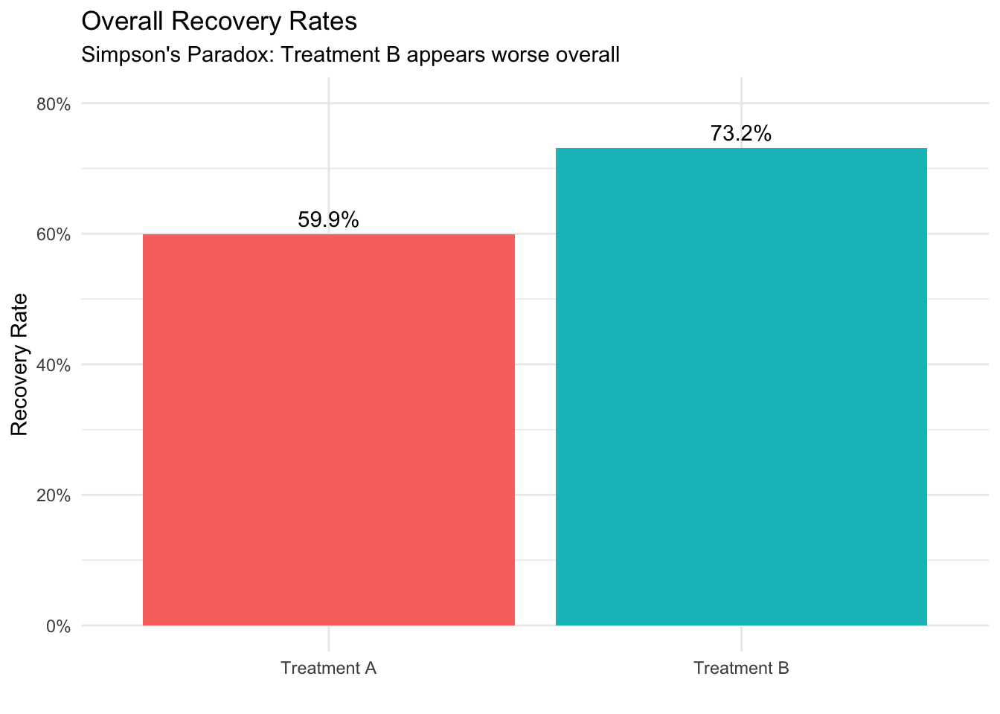

2.1 Czym są Statystyka i Nauka o Danych (Data Science)?
Ważne
Statystyka i nauka o danych to zarówno sztuka, jak i nauka wydobywania wiedzy z danych – pomagają nam zrozumieć świat poprzez metodyczną analizę zebranych informacji.
Statystyka (statistics) i nauka o danych (data science) dostarczają niezbędnych narzędzi dla badaczy nauk społecznych, niezależnie od specjalizacji. Bez względu na to, czy studiujesz nauki polityczne, ekonomię, socjologię czy inną dziedzinę nauk społecznych, narzędzia te umożliwiają:
Analizę trendów i zachowań społecznych
Mierzenie skutków różnych polityk
Formułowanie wniosków w oparciu o dowody empiryczne, a nie intuicję
Statystyka dostarcza matematycznych podstaw do analizy danych, w tym projektowania badań, syntezy informacji i testowania hipotez. Nauka o danych rozszerza te możliwości, łącząc statystykę z umiejętnościami programowania i wiedzą dziedzinową, umożliwiając pracę ze złożonymi zbiorami danych.
W dzisiejszej erze cyfrowej, wraz z szybko rosnącą ilością dostępnych danych, kompetencje analityczne stały się niezbędne dla współczesnych badaczy i specjalistów nauk społecznych.
Uwaga
W naukach społecznych nauka o danych stanowi zestaw metod do rozwiązywania złożonych problemów badawczych – łącząc podejścia statystyczne, narzędzia obliczeniowe i specjalistyczną wiedzę w celu skuteczniejszej analizy procesów społecznych.
2.2 Związek między Statystyką a Nauką o Danych
Zamiast traktować statystykę i naukę o danych jako odrębne dyscypliny, korzystniej jest postrzegać je jako podejścia uzupełniające się w ramach spektrum metod analizy danych. Naukę o danych można rozumieć jako współczesne rozszerzenie tradycyjnej statystyki, które ewoluowało w odpowiedzi na:
Nowe możliwości technologiczne
Potrzebę analizy coraz bardziej złożonych danych społecznych
Dostępność narzędzi obliczeniowych do przetwarzania dużych zbiorów danych
2.3 Podstawowe Pojęcia w Nauce o Danych i Statystyce
2.3.1 Dane i Populacje
Dane: Informacje zebrane podczas badania – obejmują odpowiedzi z ankiet, wyniki eksperymentów, wskaźniki ekonomiczne, treści z mediów społecznościowych lub wszelkie inne mierzalne obserwacje.
Rodzaje i Formaty Zbiorów Danych
2.3.2 Dane Przekrojowe
Obserwacje zebrane w jednym punkcie czasowym dla wielu podmiotów:
Osoba
Wiek
Dochód
Wykształcenie
1
25
5000
Licencjat
2
35
7500
Magister
3
45
9000
Doktorat
2.3.3 Szeregi Czasowe
Obserwacje jednego podmiotu w kolejnych punktach czasowych:
Rok
PKB (w mld)
Stopa Bezrobocia
2018
20.580
3,9%
2019
21.433
3,7%
2020
20.933
8,1%
2.3.4 Dane Panelowe (Longitudinalne)
Obserwacje wielu podmiotów w czasie:
Kraj
Rok
PKB per capita
Długość życia
Polska
2018
32.794
76,7
Polska
2019
35.118
76,8
Niemcy
2018
46.194
81,9
Niemcy
2019
46.194
82,0
2.3.5 Dane Przekrojowo-Czasowe (TSCS)
Szczególny przypadek danych panelowych gdzie:
Liczba punktów czasowych > liczba podmiotów
Struktura podobna do danych panelowych
Często stosowane w ekonomii i naukach politycznych
2.3.6 Formaty Danych
2.3.6.1 Format Szeroki
Każdy wiersz to podmiot; kolumny to zmienne/punkty czasowe:
Kraj
PKB_2018
PKB_2019
DŻ_2018
DŻ_2019
Polska
32.794
35.118
76,7
76,8
Niemcy
46.194
46.194
81,9
82,0
2.3.6.2 Format Długi
Każdy wiersz to unikalna kombinacja podmiot-czas-zmienna:
Kraj
Rok
Zmienna
Wartość
Polska
2018
PKB per capita
32.794
Polska
2019
PKB per capita
35.118
Polska
2018
Długość życia
76,7
Polska
2019
Długość życia
76,8
Niemcy
2018
PKB per capita
46.194
Niemcy
2019
PKB per capita
46.194
Niemcy
2018
Długość życia
81,9
Niemcy
2019
Długość życia
82,0
Uwaga: Format długi jest zazwyczaj preferowany do:
Manipulacji danymi w R i Pythonie
Analiz statystycznych
Wizualizacji danych
Modelowania efektów mieszanych
Analiz powtarzanych pomiarów
Populacja: Pełny zbiór jednostek (osób, instytucji, zdarzeń), których dotyczy badanie – cała grupa, na temat której badacz chce wyciągnąć wnioski.
Przykład: W badaniu preferencji wyborczych populację stanowią wszyscy obywatele uprawnieni do głosowania w danym kraju.
Próba: Podzbiór populacji wybrany do badania. Reprezentatywna próba odzwierciedla kluczowe cechy populacji docelowej we właściwych proporcjach.
Przykład: Zamiast badać wszystkich uprawnionych do głosowania, badacze mogą analizować 1500 losowo wybranych osób, uwzględniając odpowiedni rozkład wieku, płci, wykształcenia i regionu zamieszkania.
Właściwie dobrana próba umożliwia wnioskowanie o całej populacji przy jednoczesnym znacznym zmniejszeniu kosztów i czasu badań.
Dobór próby: Procedura wybierania jednostek z populacji do badania. Nieobciążona metoda doboru próby daje każdej jednostce w populacji równą szansę wyboru, zapewniając reprezentatywne wyniki.
Wnioskowanie statystyczne: Proces wyciągania wniosków o populacji na podstawie danych z próby. Obejmuje:
Obliczanie oszacowań parametrów populacji
Ocenę wiarygodności tych oszacowań
Testowanie hipotez dotyczących cech populacji
Proces wykorzystania próby do oszacowania parametru populacji. W tym przykładzie, w próbie 10 osób stwierdzono, że 6 posiada iPhone’a, co daje szacowaną proporcję w populacji na poziomie 60%. Rzeczywista proporcja w populacji wynosi 53,8%.
2.3.7 Wnioskowanie Statystyczne: Jak Mała Próba Może Reprezentować Dużą Populację?
Kiedy ankieterzy badają tylko 1000 wyborców, aby przewidzieć wynik wyborów z 30 000 000 uprawnionych do głosowania (zaledwie 0,003% populacji), może się to wydawać zagadkowe. Jak tak niewielki ułamek może powiedzieć nam coś o całości?
To podobne do próbowania zupy. Gdy gotujesz duży garnek zupy i dokładnie ją mieszasz, nie musisz zjeść całego garnka, aby wiedzieć, jak smakuje. Wystarczy jedna łyżka – o ile zupa jest dobrze wymieszana.
Analogia Zupy
Analiza Eksploracyjna: Gdy próbujesz łyżkę zupy, aby ocenić jej smak, to jest analiza eksploracyjna/opisowa.
Wnioskowanie Statystyczne: Jeśli na podstawie tej łyżki wnioskujesz, że cały garnek potrzebuje soli, to jest wnioskowanie.
Próba vs. Populacja: Twoja łyżka to próba; cały garnek to populacja.
Reprezentatywne Próbkowanie: Aby Twoje wnioskowanie było trafne, łyżka, którą spróbowałeś, musi być reprezentatywna dla całego garnka.
Dobrze Wymieszana Zupa: Zakładamy, że zupa jest dobrze wymieszana. Oznacza to, że każda łyżka powinna smakować podobnie do każdej innej łyżki, co pozwala na wiarygodne wnioskowanie o całym garnku na podstawie jednej próby.
2.3.8 Ważne!
Wielkość Próby: Użycie większej łyżki (większa próba) zazwyczaj daje większą pewność co do smaku całego garnka, nawet w dobrze wymieszanej zupie.
Zmienność: Pomimo dobrego wymieszania, żadne dwie łyżki nie będą dokładnie identyczne - zawsze istnieje pewna naturalna zmienność w rozkładzie składników.
2.3.8.1 Dlaczego Losowy Dobór Próby Działa
Losowy dobór próby działa dzięki trzem kluczowym zasadom:
Równe szanse: Każda osoba w populacji ma taką samą szansę na wybór, co zapobiega systematycznemu błędowi.
Reprezentatywna różnorodność: Gdy każdy ma równą szansę, naturalnie otrzymujesz osoby ze wszystkich różnych grup w mniej więcej takich samych proporcjach, w jakich występują w populacji.
Przykład: Jeśli 51% wyborców to kobiety, to około 51% twojej losowej próby prawdopodobnie będą stanowić kobiety (plus minus pewne losowe wahania).
Prawo wielkich liczb: Wraz ze wzrostem wielkości próby (n), losowe wahania stają się mniej istotne, a statystyki próby zbliżają się do prawdziwych wartości populacji.
Przykład: Jeśli rzucisz monetą 10 razy, możesz otrzymać 7 orłów (70%). Ale jeśli rzucisz nią 1000 razy, jest znacznie bardziej prawdopodobne, że otrzymasz około 500 orłów (50%).
Bez właściwego losowego doboru próby można łatwo uzyskać próbę obciążoną. Na przykład, gdybyś przeprowadzał ankiety tylko wśród osób w centrum handlowym w dni powszednie rano, pominąłbyś większość pracujących osób i studentów, co dałoby zniekształcony obraz populacji.
Losowość: Fundamentalne Prawo Natury
2.4 Istota Losowości
Losowość stanowi nieodłączną właściwość rzeczywistości, a nie jedynie odzwierciedlenie ograniczeń naszej wiedzy. Przejawia się ona jako nieprzewidywalne wzorce i procesy probabilistyczne (procesy stochastyczne), które przenikają zjawiska naturalne na wielu poziomach.
2.5 Przejawy Losowości w Systemach Naturalnych
2.5.1Mechanika Kwantowa: Probabilistyczne Podstawy Rzeczywistości Fizycznej
Na poziomie subatomowym deterministyczne ramy ustępują miejsca probabilistycznym:
Zasada Nieoznaczoności Heisenberga: Zasada ta ustanawia niemożność jednoczesnego określenia sparowanych właściwości fizycznych (takich jak położenie i pęd) z dowolną precyzją. Nieoznaczoność ta nie wynika z ograniczeń pomiarowych, lecz jest fundamentalną właściwością samych systemów kwantowych.
Przykład: Położenie elektronów w atomach podlega rozkładom prawdopodobieństwa, a nie zdefiniowanym orbitom. Ta kwantowa losowość umożliwia fuzję jądrową w gwiazdach—bez niej elektrony wpadałyby do jąder atomowych, a gwiazdy nie mogłyby istnieć.
Kolaps Funkcji Falowej: Obiekty kwantowe istnieją jednocześnie w wielu potencjalnych stanach (superpozycja). Podczas pomiaru te potencjalności rozstrzygają się w jeden określony stan, zgodnie z regułami prawdopodobieństwa, a nie mechanizmami przyczynowymi.
Przykład: W eksperymencie z podwójną szczeliną pojedyncze cząstki przechodzą jednocześnie przez dwie szczeliny (jak fale), ale lądują jako dyskretne punkty na detektorze, przy czym ich konkretne miejsca lądowania są fundamentalnie nieprzewidywalne.
2.5.2Zmienność Genetyczna i Procesy Ewolucyjne
Losowe zmiany w informacji genetycznej stanowią materiał dla doboru naturalnego:
Spontaniczne Mutacje: Przypadkowe zmiany w sekwencjach DNA wynikają z niestabilności molekularnych i fluktuacji termodynamicznych. Te nieprzewidywalne zmiany generują nowe cechy, które mogą wpływać na przeżycie i reprodukcję organizmu.
Przykład: Przypadkowa mutacja w DNA bakterii może nadać oporność na antybiotyki. To losowe zdarzenie, a nie ukierunkowana odpowiedź na antybiotyk, umożliwia przetrwanie, gdy populacja napotyka lek.
Rekombinacja Genetyczna: Wymiana materiału genetycznego podczas formowania komórek rozrodczych wprowadza losowe kombinacje genetyczne, tworząc różnorodność.
Przykład: Rodzeństwo dzieli około 50% swoich zmiennych genów, jednak konkretna kombinacja, którą każde z nich otrzymuje, jest określana losowo podczas mejozy, co wyjaśnia znaczne różnice między rodzeństwem.
2.5.3Teoria Chaosu: Deterministyczne Systemy z Nieprzewidywalnym Zachowaniem
Systemy rządzone przez stałe reguły matematyczne mogą mimo to wykazywać pozorną losowość:
Wrażliwość na Warunki Początkowe: Minimalne zmiany w stanach początkowych narastają wykładniczo w czasie, czyniąc długoterminowe przewidywania funkcjonalnie niemożliwymi, mimo że system podąża za deterministycznymi prawami.
Przykład: Systemy pogodowe podlegają jasnym prawom fizycznym, jednak 10-dniowa prognoza pozostaje wyzwaniem, ponieważ 0,1% błędu pomiarowego dzisiaj może skutkować przewidywaniem słońca zamiast burzy w przyszłym tygodniu.
Złożoność Emergentna: Proste reguły iteracyjne mogą generować wzorce, których złożoność wymaga opisów statystycznych, mimo ich deterministycznego pochodzenia.
Przykład: Zbiór Mandelbrota—elegancki wzór matematyczny—wywodzi się z prostego równania (z_{n+1} = z_n^2 + c), a jednak tworzy nieskończenie złożone struktury, które wydają się losowe na różnych skalach.
2.5.4Podejścia Statystyczne w Badaniach Naukowych
Naukowcy wykorzystują losowość do ustanowienia solidnych ram empirycznych:
Probabilistyczne Metody Próbkowania: Procedury losowego wyboru łagodzą systematyczne błędy i umożliwiają prawidłowe wnioskowanie o całych populacjach na podstawie reprezentatywnych podzbiorów.
Przykład: Ankieterzy polityczni badający 1500 losowo wybranych wyborców mogą przewidzieć wyniki wyborów dla milionów z dokładnością około ±3%—wyczyn niemożliwy przy nielosowym próbkowaniu.
Randomizowane Projekty Eksperymentalne: Losowy przydział jednostek eksperymentalnych do różnych warunków kontroluje zmienne zakłócające, w tym te nieprzewidziane przez badaczy.
Przykład: W badaniach farmaceutycznych pacjenci otrzymują lek lub placebo poprzez randomizację, co zapewnia, że czynniki takie jak wiek, dieta czy predyspozycje genetyczne rozkładają się równomiernie między grupami.
2.6 Metodologiczne Zastosowania Losowości
2.6.1 Randomizacja w Projektowaniu Eksperymentalnym
Losowy przydział podmiotów do warunków eksperymentalnych pełni wiele ważnych funkcji:
✅ Łagodzi błędy selekcji: Zapobiega systematycznym zniekształceniom w sposobie przydzielania podmiotów do różnych warunków.
✅ Kontroluje zmienne zakłócające: Rozkłada zarówno znane, jak i nieznane czynniki wpływające równomiernie między grupami eksperymentalnymi.
✅ Waliduje wnioskowanie statystyczne: Ustanawia podstawę do obliczeń prawdopodobieństwa przy testowaniu hipotez.
Przykład: Badacz testujący metody edukacyjne losowo przydziela uczniów do różnych podejść instruktażowych. Ta randomizacja zapewnia, że cechy takie jak inteligencja, wcześniejsza wiedza i motywacja są rozłożone podobnie między grupami, izolując efekt samej metody nauczania.
2.6.2 Probabilistyczne Ramy Próbkowania
Losowe procesy wyboru w próbkowaniu zapewniają reprezentatywność i ważność statystyczną:
✅ Równe prawdopodobieństwo wyboru: Każdy członek populacji ma tę samą szansę na włączenie do próby.
✅ Uogólnialność statystyczna: Pozwala na kwantyfikację błędu próbkowania i pewności wyników.
✅ Nieobciążona estymacja: Tworzy pomiary, których średnie wartości zbiegają do prawdziwych wartości populacji, gdy są powtarzane.
Przykład: Inżynierowie kontroli jakości losowo próbkują 50 jednostek z linii produkcyjnej liczącej 10 000 komponentów. Takie podejście zapewnia dokładne oszacowanie wskaźników defektów przy inspekcji tylko 0,5% całkowitej produkcji.
2.7 Implikacje Filozoficzne
Uznanie nieodłącznej losowości wymaga przejścia od całkowicie deterministycznego światopoglądu (gdzie wszystkie wydarzenia wynikają koniecznie z wcześniejszych przyczyn) do probabilistycznego zrozumienia rzeczywistości. Ta transformacja wykracza poza metodologię naukową do fundamentalnych pytań o przyczynowość, przewidywanie i wiedzę:
Fundamentalny Indeterminizm: Rzeczywistość fizyczna zawiera autentyczną nieprzewidywalność, a nie tylko pozorną losowość wynikającą z niepełnej informacji.
Wiedza Probabilistyczna: Absolutna pewność ustępuje miejsca stopniom pewności i obliczeniom prawdopodobieństwa jako najwyższej osiągalnej formie wiedzy w fundamentalnych dziedzinach.
Modele Probabilistyczne: Ramy matematyczne uwzględniające losowość często wykazują lepszą moc predykcyjną i użyteczność koncepcyjną w porównaniu z czysto deterministycznymi alternatywami.
Przykład: Nowoczesne podejścia obliczeniowe do zwijania białek integrują zarówno algorytmy oparte na fizyce, jak i metody próbkowania stochastycznego. To hybrydowe podejście—uznające zarówno deterministyczne siły, jak i nieodłączną losowość—przyniosło przełomy niemożliwe przy użyciu czysto deterministycznych modeli.
Ta zmiana paradygmatu umożliwia bardziej wyrafinowane podejścia do złożoności, zmienności i niepewności, wzbogacając zarówno zrozumienie teoretyczne, jak i praktyczne zastosowania w dyscyplinach naukowych.
2.8 Podstawowe Pojęcia Estymacji Statystycznej
2.8.1 Parametry populacji vs. Statystyki próby
W statystyce często chcemy poznać pewne wartości opisujące całą populację, ale zwykle nie możemy zbadać wszystkich jej elementów. Zamiast tego pobieramy próbę i obliczamy z niej wartości, które pomagają nam oszacować parametry populacyjne.
Tip
Kluczowa różnica:
- Parametr populacji (oznaczany jako \theta) to stała, ale nieznana wartość opisująca całą populację.
- Statystyka próby (oznaczana jako \hat{\theta} podczas estymacji) to wartość obliczona na podstawie próby, używana do oszacowania parametru populacyjnego.
2.8.1.1 Przykłady parametrów populacyjnych i statystyk próby
Koncepcja
Parametr populacji (Nieznany, stały)
Statystyka próby (Obliczona z próby)
Średnia (średnia arytmetyczna)
\theta = \mu (prawdziwa średnia populacji)
\hat{\theta} = \bar{x} (średnia z próby)
Wariancja
\theta = \sigma^2 (prawdziwa wariancja populacji)
\hat{\theta} = s^2 (wariancja z próby)
Proporcja
\theta = p (prawdziwa proporcja)
\hat{\theta} = \hat{p} (proporcja w próbie)
Ponieważ nie możemy bezpośrednio zaobserwować wartości \theta, używamy statystyki próby (np. \hat{\theta}) do jej oszacowania.
2.8.2 Czym jest Estymand?
Estymand to konkretny parametr populacyjny \theta, który chcemy oszacować. Reprezentuje nieznaną wartość w populacji, którą próbujemy określić.
Note
Przykład:
- Jeśli chcemy poznać średni wzrost dorosłych w Polsce, to prawdziwa średnia (\theta = \mu) jest estymandem.
- Jeśli chcemy oszacować proporcję wyborców popierających kandydata, to prawdziwa proporcja (\theta = p) jest estymandem.
2.8.3 Czym jest Estymator?
Estymator to reguła, wzór lub funkcja, którą stosujemy do próby, aby oszacować parametr populacyjny \theta.
Tip
Kluczowa idea:
- Estymator to procedura, a nie konkretna liczba!
- Ponieważ różne próby dają różne wyniki, estymator jest zmienną losową, czyli jego wartość zależy od wybranej próby.
2.8.3.1 Notacja
\theta = Prawdziwy parametr populacji (nieznany)
\hat{\theta} = Estymator (funkcja danych z próby)
2.8.3.2 Przykłady estymatorów
Średnia z próby (estymator\mu):
\hat{\theta} = \bar{x} = \frac{1}{n} \sum_{i=1}^{n} x_i
Wariancja z próby (estymator\sigma^2):
\hat{\theta} = s^2 = \frac{1}{n-1} \sum_{i=1}^{n} (x_i - \bar{x})^2
Proporcja z próby (estymatorp):
\hat{\theta} = \hat{p} = \frac{x}{n}
2.8.4 Czym jest Estymata?
Estymata to konkretna wartość liczbowa, którą uzyskujemy po zastosowaniu estymatora \hat{\theta} do próby.
2.8.4.1 Przykład: Oszacowanie średniego wzrostu dorosłych
Estymand: Prawdziwa średnia wzrostu (\theta = \mu) (nieznana).
Estymator: Wzór na średnią z próby \hat{\theta} = \bar{x} = \frac{1}{n} \sum x_i.
Estymata: Konkretna wartość, np. 173,5 cm, uzyskana na podstawie jednej próby.
2.8.5 Co Czyni Estymator Dobrym?
Gdy używamy danych do oszacowania jakiejś wartości (np. średniego wzrostu uczniów w szkole), chcemy, aby nasze oszacowanie było jak najdokładniejsze i najbardziej wiarygodne. Dobry estymator powinien spełniać cztery kluczowe cechy:
2.8.5.1 1️⃣ Nieobciążoność: Brak Systematycznego Błędu
Dobry estymator powinien średnio dawać poprawny wynik! Oznacza to, że jeśli wielokrotnie pobierzemy próbki i obliczymy oszacowania, średnia wszystkich oszacowań powinna być równa rzeczywistej wartości, którą próbujemy oszacować (\theta).
Matematycznie:
E(\hat{\theta}) = \theta
Tutaj E(\hat{\theta}) (tzw. operator wartości oczekiwanej) oznacza średnią wartość estymatora\hat{\theta} w wielu próbkach. Mówiąc prościej, jeśli powtarzalibyśmy badanie wiele razy, średnia naszych oszacowań powinna być równa prawdziwej wartości \theta. To zapewnia, że estymator nie ma systematycznej tendencji do zawyżania lub zaniżania wyników.
2.8.5.2 2️⃣ Efektywność: Jak Najmniejsza Zmienność
Nawet jeśli estymator jest nieobciążony, jego wyniki mogą być rozproszone. Dobry estymator powinien dawać możliwie najmniejszą wariancję, czyli wyniki blisko siebie, a nie zbyt rozrzucone. Im mniej “skacze” wokół prawdziwej wartości, tym jest bardziej wiarygodny.
2.8.5.3 3️⃣ Zbieżność: Więcej Danych = Większa Dokładność
Zbieżny estymator poprawia się w miarę zwiększania liczby obserwacji. Gdy mamy małą próbkę, oszacowanie może być niedokładne, ale jeśli zbierzemy więcej danych, nasz estymator powinien coraz bardziej zbliżać się do prawdziwej wartości\theta.
2.8.5.4 4️⃣ Dostateczność: Wykorzystuje Całą Informację z Próby
Dostateczny estymator maksymalnie wykorzystuje dostępne dane. Nie marnuje informacji, ani nie pomija niczego istotnego. Jeśli mamy pełny zestaw danych, dostateczny estymator zapewnia, że uzyskujemy wszystkie możliwe informacje o \theta z naszej próbki.
2.8.6 Dlaczego Szacowania Się Różnią? (Rozkład Próbkowania)
Jeśli pobierzemy różne próbki z populacji, dostaniemy różne oszacowania. Aby zrozumieć te różnice, analizujemy rozkład próbkowania—czyli rozkład wartości estymatora w różnych próbkach.
2.8.6.1 Kluczowe Fakty o Rozkładach Próbkowania
Każda próbka daje inne oszacowanie – Dwie osoby, które przeprowadzą niezależne badania, mogą uzyskać różne wyniki.
Różnice te nie są przypadkowe – Rozkład próbkowania opisuje, jak te oszacowania są rozłożone.
Większa próba oznacza mniejszą zmienność – Im więcej danych, tym dokładniejsze oszacowanie.
Rozkład próbkowania pozwala mierzyć niepewność – Dzięki niemu możemy wyznaczać przedziały ufności i przeprowadzać testy statystyczne.
2.8.6.2 Przykład: Średnia Próby
Załóżmy, że wielokrotnie losujemy próbki z populacji i za każdym razem obliczamy średnią. Otrzymane wartości utworzą rozkład próbkowania średniej, którego centrum będzie się znajdować w pobliżu prawdziwej wartości \mu.
Matematycznie, średnia z próby to:
\hat{\theta} = \bar{x} = \frac{1}{n} \sum_{i=1}^{n} x_i
gdzie x_1, x_2, ..., x_n to wartości w naszej próbie.
Oznacza to, że jeśli wielokrotnie pobieramy próbki, średnia wszystkich średnich próbkowych powinna być bliska rzeczywistej średniej \mu populacji.
Rozkład Normalny - Fundament Teorii Prawdopodobieństwa
2.9 Rozkłady Prawdopodobieństwa
Rozkład prawdopodobieństwa to funkcja matematyczna przypisująca prawdopodobieństwa wszystkim możliwym wynikom zmiennej losowej. Wyróżniamy:
Rozkłady dyskretne: Dla policzalnych wyników (np. dwumianowy, Poissona)
Rozkłady ciągłe: Dla przedziałów wartości (np. normalny, wykładniczy)
2.10 Rozkład Normalny: Kluczowe Właściwości
Rozkład normalny (Gaussa) charakteryzuje się doskonałą symetrią i jest opisany funkcją:
Unimodalność: Pojedynczy szczyt pokrywający się ze średnią i medianą
Punkty przegięcia dokładnie w \mu \pm \sigma
2.11 Standardowy Rozkład Normalny i Reguła Empiryczna
Po standaryzacji (Z = \frac{X-\mu}{\sigma}) otrzymujemy standardowy rozkład normalny (Z) z \mu = 0 i \sigma = 1.
2.11.1 Reguła 68-95-99,7
68,27% danych mieści się w przedziale \mu \pm 1\sigma
95,45% danych mieści się w przedziale \mu \pm 2\sigma
99,73% danych mieści się w przedziale \mu \pm 3\sigma
Przykład: Przy wzroście mężczyzn o średniej \mu = 175 cm i \sigma = 7 cm, około 95% mężczyzn ma wzrost między 161 a 189 cm.
2.11.2 Centralne Twierdzenie Graniczne
Kluczowe twierdzenie statystyki stanowiące, że średnie z próby losowej zbliżają się do rozkładu normalnego wraz ze wzrostem liczebności próby, niezależnie od pierwotnego rozkładu populacji.
Praktyczne znaczenie: Nawet gdy dane nie mają rozkładu normalnego (np. czasy reakcji są zwykle skośne), średnie z wielu grup będą zbliżać się do rozkładu normalnego.
2.12 Zastosowania Praktyczne
Testowanie hipotez: Testy t i Z
Przedziały ufności: Szacowanie parametrów populacji
Analiza regresji: Modelowanie zależności
Kontrola jakości: Monitorowanie procesów
Przykład: Badacze farmaceutyczni mierzą wyniki poprawy u pacjentów. Przed zastosowaniem testów statystycznych weryfikują oni założenie o normalności rozkładu danych. W zależności od wyniku wybierają testy parametryczne (test t) lub nieparametryczne (test Manna-Whitneya).
2.13 Wizualizacja
Rozkład normalny tworzy charakterystyczną krzywą dzwonową, gdzie większość obserwacji grupuje się wokół średniej, a wartości ekstremalne są coraz rzadsze:
# Wczytaj niezbędne bibliotekilibrary(ggplot2)# Zdefiniuj parametrymu <-0# Średniasigma <-1# Odchylenie standardowe# Utwórz sekwencję wartości xx <-seq(mu -4*sigma, mu +4*sigma, length.out =1000)# Oblicz odpowiadające wartości y (gęstość prawdopodobieństwa)y <-dnorm(x, mean = mu, sd = sigma)# Utwórz ramkę danych do wizualizacjinormal_df <-data.frame(x = x, y = y)# Oblicz regiony dla reguły empirycznejsd1_min <- mu - sigmasd1_max <- mu + sigmasd2_min <- mu -2*sigmasd2_max <- mu +2*sigmasd3_min <- mu -3*sigmasd3_max <- mu +3*sigma# Utwórz wykresggplot(normal_df, aes(x = x, y = y)) +geom_line(color ="black", linewidth =1) +# Wypełnij obszary dla reguły empirycznejgeom_area(data =subset(normal_df, x >= sd1_min & x <= sd1_max), aes(x = x, y = y), fill ="darkblue", alpha =0.4) +geom_area(data =subset(normal_df, (x >= sd2_min & x < sd1_min) | (x > sd1_max & x <= sd2_max)), aes(x = x, y = y), fill ="blue", alpha =0.3) +geom_area(data =subset(normal_df, (x >= sd3_min & x < sd2_min) | (x > sd2_max & x <= sd3_max)), aes(x = x, y = y), fill ="lightblue", alpha =0.2) +# Dodaj pionowe linie przy odchyleniach standardowychgeom_vline(xintercept =c(sd1_min, sd1_max), linetype ="dashed", color ="darkblue") +geom_vline(xintercept =c(sd2_min, sd2_max), linetype ="dashed", color ="blue") +geom_vline(xintercept =c(sd3_min, sd3_max), linetype ="dashed", color ="lightblue") +# Dodaj linię średniejgeom_vline(xintercept = mu, color ="red", linewidth =1) +# Dodaj adnotacjeannotate("text", x =0, y =0.05, label ="68,27%", color ="darkblue", size =4) +annotate("text", x =-1.5, y =0.05, label ="13,59%", color ="blue", size =4) +annotate("text", x =1.5, y =0.05, label ="13,59%", color ="blue", size =4) +annotate("text", x =-2.5, y =0.05, label ="2,14%", color ="lightblue", size =4) +annotate("text", x =2.5, y =0.05, label ="2,14%", color ="lightblue", size =4) +labs(title ="Standardowy Rozkład Normalny i Reguła Empiryczna",subtitle ="Ilustracja reguły 68-95-99,7",x ="Wartość Z (odchylenia standardowe od średniej)",y ="Gęstość prawdopodobieństwa") +theme_minimal() +theme(plot.title =element_text(hjust =0.5),plot.subtitle =element_text(hjust =0.5))
Ta wizualizacja demonstruje, jak masa prawdopodobieństwa koncentruje się wokół średniej i zmniejsza się na krańcach, ilustrując dlaczego wartości ekstremalne w zmiennych o rozkładzie normalnym są coraz mniej prawdopodobne w miarę oddalania się od średniej.
2.14 Znaczenie Filozoficzne
Rozkład normalny pokazuje jak losowość na poziomie indywidualnym może tworzyć przewidywalne wzorce na poziomie zbiorowym. To jedno z najważniejszych połączeń między determinizmem a losowością w nauce.
Typy Danych i Zmiennych
Dane stanowią empiryczną podstawę całego wnioskowania statystycznego. Natura danych determinuje, które metody analityczne są odpowiednie, jakie wnioski można wyciągnąć oraz jakie ograniczenia istnieją w interpretacji.
2.15 Metody Pozyskiwania Danych
Dane pierwotne: Zbierane bezpośrednio dla konkretnego pytania badawczego
Skala ilorazowa: Uporządkowana z regularnymi odstępami i znaczącym punktem zerowym
Przykłady: Wzrost, waga, dochód, czas reakcji, temperatura absolutna (K)
Właściwości: Proporcje między wartościami są znaczące (10 kg jest dwa razy cięższe niż 5 kg)
Operacje: Wszystkie operacje arytmetyczne, średnia geometryczna, współczynnik zmienności
2.17.3 Według Roli w Analizie
Zmienne niezależne (predyktory, zmienne objaśniające): Zmienne manipulowane lub wybierane w celu zbadania ich wpływu na zmienne zależne
Przykład: Dawka leku w badaniu klinicznym
Zmienne zależne (zmienne odpowiedzi, wyniki): Zmienne mierzone w celu oceny wpływu zmiennych niezależnych
Przykład: Obniżenie ciśnienia krwi po podaniu leku
Zmienne zakłócające: Niekontrolowane zmienne, które mogą wpływać na związek między zmiennymi niezależnymi a zależnymi
Przykład: Wiek pacjenta wpływający zarówno na wybór leczenia, jak i na wynik powrotu do zdrowia
Zmienne kontrolne: Zmienne utrzymywane na stałym poziomie lub uwzględniane statystycznie
Przykład: Wykształcenie w analizie determinantów dochodu
Zrozumienie natury danych zapewnia wybór odpowiednich metod statystycznych, pozwalając uniknąć mylących wniosków wynikających z niedopasowania metodologicznego.
2.18 Wnioskowanie Statystyczne: Nieformalne Wprowadzenie
Wnioskowanie statystyczne to proces wyciągania wniosków o populacji na podstawie danych z próby. Wyobraź to sobie jako formułowanie trafnych przypuszczeń o całej pizzy po spróbowaniu tylko jednego kawałka. Obejmuje ono dwie główne dziedziny:
2.19 Estymacja
Estymacja to proces wykorzystywania danych z próby do oszacowania nieznanych parametrów populacji. Rozróżniamy:
Estymacja punktowa: Podanie pojedynczej wartości jako najlepszego przybliżenia parametru (jakby powiedzieć “Myślę, że średni wzrost to dokładnie 174 cm”)
Estymacja przedziałowa: Tworzenie przedziału ufności, który wskazuje zakres możliwych wartości parametru zgodnych z naszymi danymi (jakby powiedzieć “Jestem w miarę pewien, że średni wzrost mieści się między 173 cm a 175 cm”)
Przykład przedziału ufności: “95% przedział ufności dla średniego wzrostu dorosłych wynosi (173 cm, 175 cm).”
Poprawna interpretacja przedziału ufności: Gdybyśmy wielokrotnie pobierali próby z tej samej populacji i konstruowali 95% przedział ufności dla każdej próby, używając tej samej metody, około 95% tych przedziałów zawierałoby prawdziwą wartość parametru populacji.
Niepoprawna interpretacja: “Istnieje 95% szansa, że prawdziwa średnia znajduje się w przedziale (173 cm, 175 cm)” – jest to niepoprawne, ponieważ parametr populacji jest stałą (choć nieznaną) wartością, a nie zmienną losową. To jak powiedzenie “albo prawdziwa wartość jest w tym przedziale, albo nie jest” - te 95% odnosi się do niezawodności metody, a nie do prawdopodobieństwa zawierania prawdziwej wartości w pojedynczym przedziale.
2.20 Testowanie Hipotez
Testowanie hipotez to sposób sprawdzania, czy twierdzenie dotyczące grupy (lub populacji) jest prawdopodobnie prawdziwe, czy nie. To jak bycie detektywem: zbierasz dowody (dane) i decydujesz, czy dowody potwierdzają twoje twierdzenie.
2.20.1 Przykład 1: Testowanie, czy moneta jest stronnicza na korzyść orła
Wyobraź sobie, że twój przyjaciel ma monetę, która wydaje się częściej wypadać orłem niż reszką. Sprawdźmy eksperymentalnie, czy moneta jest stronnicza.
2.20.1.1 Krok 1: Zadaj pytanie badawcze
Pytanie: Czy moneta jest stronnicza na korzyść orła? (Czy prawdopodobieństwo wypadnięcia orła jest większe niż 0,5?)
Hipoteza alternatywna (H₁): Moneta jest stronnicza na korzyść orła. (Prawdopodobieństwo wypadnięcia orła > 0,5)
Pomyśl o hipotezie zerowej jak o pozycji “niewinny, dopóki nie udowodni się winy”. Zakładamy, że moneta jest uczciwa, chyba że nasze dowody silnie sugerują inaczej.
2.20.1.3 Krok 3: Zbierz dane
Rzucasz monetą 100 razy i otrzymujesz 65 orłów.
2.20.1.4 Krok 4: Analizuj dane
Gdyby moneta była uczciwa, spodziewałbyś się około 50 orłów w 100 rzutach.
Otrzymanie 65 orłów to więcej niż oczekiwaliśmy, ale czy to wystarczy, aby stwierdzić, że moneta jest stronnicza?
Odchylenie standardowe (miara tego, jak bardzo wyniki zwykle się różnią) dla 100 rzutów uczciwą monetą wynosi 5.
Otrzymanie 65 orłów to 3 odchylenia standardowe powyżej oczekiwanych 50 orłów. To jak koszykarz, który zwykle zdobywa 20 punktów na mecz, nagle zdobywający 35 - to nietypowe!
2.20.1.5 Krok 5: Oblicz wartość p
Wartość p to prawdopodobieństwo uzyskania wyniku tak skrajnego lub bardziej skrajnego niż zaobserwowany (65 orłów), jeśli moneta byłaby uczciwa.
Dla testu jednostronnego (ponieważ nasza H₁ to “moneta jest stronnicza na korzyść orła”), oznacza to prawdopodobieństwo uzyskania 65 lub więcej orłów ze 100 rzutów uczciwą monetą.
W tym przypadku wartość p jest bardzo mała (około 0,0013), co oznacza, że bardzo rzadko można by uzyskać tak wiele orłów przez przypadek przy uczciwej monecie.
Formalny sposób obliczania wartości p
Dla naszego przykładu z rzutem monetą z testem jednostronnym:
Hipoteza zerowa H₀: p = 0,5 (uczciwa moneta)
Hipoteza alternatywna H₁: p > 0,5 (stronnicza na korzyść orła)
Statystyka testowa: X = 65 orłów z n = 100 rzutów
Wartość p dla testu jednostronnego to:
p\text{-wartość} = P(X \geq 65 | n=100, p=0,5)
Korzystając z funkcji masy prawdopodobieństwa rozkładu dwumianowego:
Ta wartość p jest znacznie poniżej powszechnego progu istotności 0,05, co wskazuje na silne dowody przeciwko hipotezie zerowej.
2.20.1.6 Krok 6: Podejmij decyzję
Jeśli wartość p jest mała (zwykle mniejsza niż 0,05), odrzucamy hipotezę zerową.
Tutaj wartość p (0,0013) jest znacznie mniejsza niż 0,05, więc dochodzimy do wniosku, że moneta jest stronnicza na korzyść orła.
To jakby powiedzieć: “Gdyby moneta była uczciwa, zobaczylibyśmy 65 lub więcej orłów ze 100 rzutów tylko w około 0,13% przypadków, co jest tak rzadkie, że nie wierzymy, że ta moneta jest uczciwa.”
2.20.2 Przykład 2: Testowanie wpływu muzyki w tle na pamięć
Przyjrzyjmy się innemu przykładowi z psychologii: Czy słuchanie muzyki klasycznej poprawia pamięć?
2.20.2.1 Krok 1: Pytanie badawcze
Czy słuchanie muzyki klasycznej podczas nauki poprawia zapamiętywanie w porównaniu do nauki w ciszy?
2.20.2.2 Krok 2: Hipotezy
H₀: Muzyka klasyczna nie ma wpływu na zapamiętywanie (średnie wyniki zapamiętywania są takie same).
H₁: Muzyka klasyczna poprawia zapamiętywanie (średnie wyniki zapamiętywania są wyższe przy muzyce).
Pomyśl o tym jako o rozpoczęciu z założeniem, że muzyka nie robi różnicy (H₀), a następnie sprawdzeniu, czy nasze dane przekonują nas inaczej.
2.20.2.3 Krok 3: Zbierz dane
Losowo przydzielasz 60 studentów do dwóch grup:
Grupa A (30 studentów): Uczy się listy słów w ciszy
Grupa B (30 studentów): Uczy się tej samej listy, słuchając muzyki klasycznej
Po 20 minutach obie grupy piszą ten sam test pamięci. Grupa A (cisza) pamięta średnio 14,2 słowa, podczas gdy Grupa B (muzyka) pamięta średnio 16,8 słowa.
2.20.2.4 Krok 4-6: Analiza i decyzja
Po przeanalizowaniu danych obliczasz wartość p wynoszącą 0,02. Oznacza to, że gdyby muzyka naprawdę nie miała wpływu, zobaczylibyśmy różnicę tak dużą lub większą tylko w około 2% przypadków przez czysty przypadek.
Ponieważ 0,02 < 0,05, odrzucasz H₀ i dochodzisz do wniosku, że muzyka klasyczna rzeczywiście wydaje się poprawiać zapamiętywanie.
Ważna uwaga dotycząca wielkości efektu: Różnica 2,6 słowa może być statystycznie istotna, ale powinna być oceniana pod kątem praktycznego znaczenia. Czy zapamiętanie około 3 słów więcej jest znaczące w kontekstach świata rzeczywistego? To jak wykrycie, że nowa technika nauki pomaga uczniom zapamiętać 3 słowa więcej – statystycznie wykrywalne, ale czy to wystarczy, aby zmienić sposób, w jaki się uczymy? To podkreśla, dlaczego musimy brać pod uwagę zarówno istotność statystyczną, JAK I praktyczne znaczenie.
2.21 Ogólne kroki testowania hipotez
Sformułuj hipotezy:
Hipoteza zerowa (H₀): Domyślne twierdzenie lub twierdzenie o “braku efektu”.
Hipoteza alternatywna (H₁): Twierdzenie, które testujesz.
Wybierz poziom istotności (α):
Jest to próg decydujący, czy wartość p jest wystarczająco mała, aby odrzucić H₀. Powszechne wybory to 0,05 lub 0,01.
Pomyśl o tym jako o decydowaniu “jak pewny” musisz być, zanim postawisz tezę - jak ustalenie bariery dla “uzasadnionych wątpliwości” w sprawie sądowej.
Zbierz dane:
Zgromadź dowody z reprezentatywnej próby.
Oblicz statystykę testową i wartość p:
Statystyka testowa mierzy, jak daleko twoje dane odbiegają od tego, co przewiduje H₀.
Wartość p mówi ci, jak prawdopodobny jest zaobserwowany wynik/efekt (lub wynik/efekt bardziej skrajny), jeśli H₀ jest prawdziwa.
Pomyśl o wartości p jako o mierze tego, jak bardzo byłbyś zaskoczony, widząc swoje wyniki, gdyby hipoteza zerowa była prawdziwa.
Podejmij decyzję:
Jeśli wartość p < α, odrzuć H₀ i przyjmij H₁.
Jeśli wartość p ≥ α, nie odrzucaj H₀ (ale to nie dowodzi, że H₀ jest prawdziwa).
Zinterpretuj wyniki w kontekście:
Rozważ zarówno istotność statystyczną, jak i praktyczne znaczenie.
Zapytaj: “Nawet jeśli ten efekt jest ‘istotny’ w sensie statystycznym, czy ma on praktyczne znaczenie w świecie rzeczywistym?”
2.22 Intuicja testowania hipotez
Pomyśl o testowaniu hipotez jak o procesie sądowym:
Hipoteza zerowa (H₀): Oskarżony jest niewinny.
Hipoteza alternatywna (H₁): Oskarżony jest winny.
Dane: Dowody przedstawione w sądzie.
Wartość p: Jak mało prawdopodobne byłyby dowody, gdyby oskarżony był naprawdę niewinny.
Poziom istotności (α): Standard dowodu potrzebny do skazania.
Jeśli dowody są bardzo mało prawdopodobne przy założeniu niewinności (wartość p < α), odrzucamy H₀ (skazujemy oskarżonego). Jeśli nie, nie odrzucamy H₀ (oskarżony pozostaje “nieudowodniony jako winny”).
2.23 Częste błędy związane z wartościami p
Wartość p NIE jest prawdopodobieństwem, że H₀ jest prawdziwa.
Jest to prawdopodobieństwo zobaczenia twoich danych (lub czegoś bardziej skrajnego) jeśli H₀ byłaby prawdziwa.
Pomyśl o tym jako o prawdopodobieństwie wylosowania zwycięskiego losu na loterii (twoje dane), JEŚLI loteria byłaby uczciwa, a nie o prawdopodobieństwie, że loteria jest uczciwa.
Wartość p NIE jest szansą popełnienia błędu.
Nie mówi ci o prawdopodobieństwie pomyłki przy odrzucaniu H₀.
Nieodrzucenie H₀ NIE dowodzi, że jest ona prawdziwa.
Oznacza to tylko, że nie ma wystarczających dowodów, aby ją odrzucić (“brak dowodów nie jest dowodem nieobecności”).
Jak gdy detektyw mówi “niewystarczające dowody” - nie oznacza to, że podejrzany jest niewinny, tylko że nie mogli udowodnić winy.
Mała wartość p NIE oznacza, że wynik jest ważny.
Oznacza tylko, że wynik jest statystycznie istotny. Efekt może być nadal znikomy w kategoriach świata rzeczywistego.
Jak wykrycie, że jeden samochód jest o 0,1 km/h szybszy od drugiego - wykrywalnie różny, ale praktycznie bez znaczenia.
Wartości p zależą od wielkości próby.
Przy bardzo dużych próbach nawet drobne, praktycznie nieistotne różnice mogą stać się statystycznie istotne.
Jak bardzo czuła waga, która może wykryć różnice wagi 0,001g, ale nie oznacza to, że takie różnice mają znaczenie dla większości celów.
2.24 Rodzaje błędów w testowaniu hipotez
Błąd typu I (Fałszywie Pozytywny):
Odrzucenie H₀, gdy jest ona faktycznie prawdziwa.
Przykład: Stwierdzenie, że lek działa, gdy faktycznie nie działa.
Prawdopodobieństwo tego błędu = α (poziom istotności).
Pomyśl o tym jako o skazaniu niewinnej osoby.
Błąd typu II (Fałszywie Negatywny):
Nieodrzucenie H₀, gdy jest ona faktycznie fałszywa.
Przykład: Stwierdzenie, że lek nie działa, gdy faktycznie działa.
Prawdopodobieństwo tego błędu = β.
Pomyśl o tym jako o wypuszczeniu winnej osoby na wolność.
Moc testu (1 - β):
Prawdopodobieństwo poprawnego odrzucenia H₀, gdy jest ona fałszywa.
Pomyśl o tym jako o zdolności testu do wykrycia rzeczywistego efektu, gdy on istnieje.
Jak zdolność wykrywacza metali do znajdowania rzeczywistych metalowych przedmiotów.
Moc zwiększa się wraz z:
Większymi próbami (badanie większej ilości dowodów)
Wyższymi poziomami istotności (bycie mniej restrykcyjnym co do tego, co liczy się jako “metal”)
Rozważ tę tabelę pokazującą możliwe wyniki:
Rzeczywistość
Decyzja: Odrzuć H₀
Decyzja: Nie odrzucaj H₀
H₀ Prawdziwa
Błąd typu I (α)
Poprawna decyzja
H₀ Fałszywa
Poprawna decyzja (Moc)
Błąd typu II (β)
2.25 Kluczowe wnioski
Testowanie hipotez pomaga zdecydować, czy twoje dane potwierdzają twierdzenie.
Wartość p mówi ci, jak zaskakujące są twoje dane, zakładając, że H₀ jest prawdziwa.
Zawsze interpretuj wartości p ostrożnie i unikaj typowych błędów.
Pamiętaj: Istotność statystyczna ≠ znaczenie praktyczne.
Zarówno poziom istotności (α), jak i moc (1-β) są ważne dla wiarygodnego wnioskowania.
Większe próby zmniejszają oba rodzaje błędów, ale mogą sprawić, że błahe efekty staną się statystycznie istotne.
2.26 Modele Statystyczne
Model statystyczny to matematyczna reprezentacja rzeczywistości, która opisuje relacje między zmiennymi oraz strukturę danych. Pozwala on opisać proces generowania danych (DGP) oraz umożliwia wnioskowanie o nieznanych parametrach.
Składniki Modelu Statystycznego
Kompletny model statystyczny składa się z następujących elementów:
Forma funkcjonalna: Struktura matematyczna definiująca relację między zmiennymi (np. liniowa, kwadratowa, wykładnicza).
Zmienne:
Zmienna zależna: Wynik, który chcemy przewidzieć lub wyjaśnić.
Zmienne niezależne/objaśniające: Czynniki, które mogą wpływać na zmienną zależną.
Parametry: Nieznane wielkości, które szacujemy na podstawie danych (np. współczynniki regresji, takie jak \beta_0 i \beta_1).
Składnik losowy: Składnik błędu (\epsilon), który uwzględnia niewyjaśnioną zmienność w danych.
Założenia dotyczące rozkładu prawdopodobieństwa: Założenia dotyczące rozkładu składnika losowego (np. normalność, homoskedastyczność).
\beta_0 (wyraz wolny) i \beta_1 (współczynnik nachylenia) to parametry, które szacujemy.
\epsilon reprezentuje składnik losowy, który przechwytuje zmienność niewyjaśnioną przez model.
Zakładamy, że składnik losowy ma rozkład normalny o średniej 0 i wariancji \sigma^2.
2.26.1 Wnioskowanie Przyczynowe vs. Predykcyjne
W modelowaniu statystycznym można wyróżnić dwa główne cele:
Wnioskowanie Przyczynowe:
Cel: Określenie, czy zmiana zmiennej Xpowoduje zmianę zmiennej Y.
Wymagania: Silne założenia lub specjalne projekty badawcze (np. randomizowane badania kontrolowane, zmienne instrumentalne).
Zastosowanie: Używane do przewidywania efektów interwencji lub zmian politycznych.
Przykład: Czy podniesienie płacy minimalnej (X) powoduje spadek zatrudnienia (Y)?
Wnioskowanie Predykcyjne:
Cel: Przewidywanie wartości Y na podstawie X.
Wymagania: Nie ma potrzeby zakładania związku przyczynowego między zmiennymi.
Skupienie: Maksymalizacja dokładności predykcji, często z wykorzystaniem technik uczenia maszynowego.
Przykład: Przewidywanie cen domów (Y) na podstawie cech takich jak powierzchnia, lokalizacja i liczba sypialni (X).
Ostrzeżenie: Korelacja ≠ Przyczynowość
Fałszywa zależność (lub fałszywa korelacja) występuje, gdy dwie zmienne są statystycznie powiązane, ale nie mają związku przyczynowego. Może to wynikać z:
Zmiennej zakłócającej: Trzecia zmienna wpływa na zarówno X, jak i Y.
Przykład: Sprzedaż lodów (X) i liczba utonięć (Y) są skorelowane, ponieważ oba zjawiska nasilają się latem (zmienna zakłócająca: temperatura).
Odwrotnej przyczynowości: Y wpływa na X, a nie odwrotnie.
Przykład: Wyższa przestępczość (Y) prowadzi do większej obecności policji (X), a nie na odwrót.
Przypadku: Losowe korelacje, które występują przez przypadek.
Przykład: Korelacja między liczbą piratów a globalną temperaturą (czysty przypadek).
2.26.2 Wyzwania Wnioskowania Przyczynowego
Fundamentalnym problemem wnioskowania przyczynowego jest niemożność zaobserwowania stanów kontrfaktycznych (alternatywnych scenariuszy). Dla danej jednostki możemy zaobserwować tylko jeden potencjalny wynik.
Fundamentalny problem wnioskowania przyczynowego: Możemy myśleć o wnioskowaniu przyczynowym jako o problemie PRZEWIDYWANIA. Jak możemy przewidzieć stan kontrfaktyczny, skoro nigdy go nie obserwujemy?
Przykład:
Obserwujemy osobę, która ukończyła studia i zarabia 8000 zł miesięcznie
Nie możemy zaobserwować, ile ta sama osoba zarabiałaby, gdyby nie ukończyła studiów
Metody przyczynowe próbują rozwiązać ten problem, na przykład, poprzez:
Eksperymenty randomizowane
Zmienne instrumentalne
Metody dopasowania (ang. matching methods)
Analizę nieciągłości regresji (ang. regression discontinuity)
Różnicę w różnicach (ang. difference-in-differences)
Typowe problemy we wnioskowaniu przyczynowym:
Błąd zmiennej zakłócającej: picie alkoholu poprzedniego wieczoru jest wspólną przyczyną spania w butach i budzenia się z bólem głowy
Odwrotna przyczynowość
2.27 Zrozumienie błędów statystycznych
Podczas używania próby do wnioskowania o populacji nieuniknione są błędy statystyczne:
Błąd statystyczny to różnica między oszacowaniem na podstawie próby a rzeczywistą wartością populacyjną.
Błędy te mogą wpływać na wiarygodność i rzetelność badań. Ich zrozumienie jest kluczowe dla projektowania solidnych badań, dokładnej analizy danych i wyciągania poprawnych wniosków.
2.28 Rodzaje błędów statystycznych
2.28.1 Błędy próbkowania
2.28.1.1 Losowe błędy próbkowania
Definicja: Naturalna zmienność oszacowań wynikająca z losowego doboru próby.
Przykład: Średni wzrost 30 losowo wybranych studentów uniwersytetu różni się między próbkami.
Uwzględnianie znaczenia praktycznego, a nie tylko statystycznego.
Branie pod uwagę potencjalnych braków danych.
Przedrejestracja
Definiowanie planu analizy przed rozpoczęciem badań.
Określenie głównych wyników i metod.
Dokumentowanie wszelkich odstępstw od planu.
Przejrzystość
Udostępnianie danych i metod.
Jasna dokumentacja decyzji analitycznych.
Replikacja
Zachęcanie do niezależnej weryfikacji wyników.
Wspieranie powtórzeń badań.
Ciągłe kształcenie
Śledzenie najlepszych praktyk.
Przestrzeganie wytycznych danej dziedziny.
Angażowanie się w innowacje metodologiczne.
Zrozumienie i minimalizowanie błędów statystycznych zwiększa wiarygodność wyników badań, zapobiegając błędnym decyzjom w dziedzinach takich jak medycyna, polityka, edukacja i biznes.
2.30 Appendices: Additional Topics in Statistics and Data Science (*)
2.31 Appendix A: R for Social Science Data Analysis
R offers powerful capabilities for social science research, from data manipulation to advanced statistical modeling.
Click to show/hide R code
library(tidyverse)
── Attaching core tidyverse packages ──────────────────────── tidyverse 2.0.0 ──
✔ dplyr 1.1.4 ✔ readr 2.1.5
✔ forcats 1.0.0 ✔ stringr 1.5.1
✔ lubridate 1.9.3 ✔ tibble 3.2.1
✔ purrr 1.0.2 ✔ tidyr 1.3.1
── Conflicts ────────────────────────────────────────── tidyverse_conflicts() ──
✖ dplyr::filter() masks stats::filter()
✖ dplyr::lag() masks stats::lag()
ℹ Use the conflicted package (<http://conflicted.r-lib.org/>) to force all conflicts to become errors
Click to show/hide R code
# Set seed for reproducibilityset.seed(42)# Generate example data with a Simpson's Paradoxn <-1000data <-tibble(age_group =sample(c("Young", "Middle", "Old"), n, replace =TRUE, prob =c(0.3, 0.4, 0.3)),education_years =case_when( age_group =="Young"~rnorm(n, mean =10, sd =1), age_group =="Middle"~rnorm(n, mean =13, sd =1), age_group =="Old"~rnorm(n, mean =16, sd =1) ),income =case_when( age_group =="Young"~70000+1000* education_years +rnorm(n, mean =0, sd =5000), age_group =="Middle"~50000+1000* education_years +rnorm(n, mean =0, sd =5000), age_group =="Old"~30000+1000* education_years +rnorm(n, mean =0, sd =5000) ))# Basic data summarysummary(data)
age_group education_years income
Length:1000 Min. : 6.628 Min. :34068
Class :character 1st Qu.:10.913 1st Qu.:51508
Mode :character Median :13.004 Median :63376
Mean :12.986 Mean :63307
3rd Qu.:14.934 3rd Qu.:75023
Max. :18.861 Max. :96620
education_years income
education_years 1.0000000 -0.8152477
income -0.8152477 1.0000000
Click to show/hide R code
# Overall trend (Simpson's Paradox)overall_plot <-ggplot(data, aes(x = education_years, y = income)) +geom_point(alpha =0.5) +geom_smooth(method ="lm", se =FALSE, color ="red") +labs(title ="Overall Relationship between Education and Income",subtitle ="Simpson's Paradox: Appears negative",x ="Years of Education", y ="Income") +theme_minimal()# Trend by age group (Resolving Simpson's Paradox)grouped_plot <-ggplot(data, aes(x = education_years, y = income, color = age_group)) +geom_point(alpha =0.5) +geom_smooth(method ="lm", se =FALSE) +labs(title ="Relationship between Education and Income by Age Group",subtitle ="Resolving Simpson's Paradox: Positive relationship within groups",x ="Years of Education", y ="Income") +theme_minimal()# Print resultsprint(overall_plot)
`geom_smooth()` using formula = 'y ~ x'
Click to show/hide R code
print(grouped_plot)
`geom_smooth()` using formula = 'y ~ x'
This example demonstrates Simpson’s Paradox, where the overall relationship between education and income appears negative, but when grouped by age, the relationship within each group is positive. This illustrates how critical it is to consider confounding variables in your analysis.
2.32 Appendix B: Causal Inference vs. Observational Studies
Understanding the relationship between variables is crucial in social sciences. Two key approaches are causal inference and observational studies, each with distinct strengths and limitations.
2.32.1 Causal Inference
Aims to establish cause-and-effect relationships
Often involves experimental designs or advanced statistical techniques
Seeks to answer “What if?” questions and determine the impact of interventions
Correlation: Measures the strength and direction of a relationship between variables
Causation: Indicates that changes in one variable directly cause changes in another
While strong correlations can suggest potential causal links, additional evidence and rigorous methods are required to establish causality.
2.32.3 Challenges in Establishing Causality
Confounding variables: Unmeasured factors that affect both the presumed cause and effect
Reverse causality: The presumed effect might actually be causing the presumed cause
Selection bias: Non-random selection of subjects into study groups
2.32.4 Methods to Strengthen Causal Claims
Randomized controlled trials (when ethical and feasible)
Natural experiments or quasi-experimental designs
Propensity score matching
Difference-in-differences analysis
Instrumental variable approaches
Directed acyclic graphs (DAGs) for visualizing causal relationships
Understanding these distinctions is crucial in social sciences, where ethical considerations often limit experimental manipulation.
2.33 Appendix C: Understanding Spurious Correlations, Confounders, and Colliders
These concepts are essential for avoiding misinterpretations in statistical analysis. Let’s explore them with R examples.
Load required libraries
library(tidyverse)library(viridis)set.seed(123) # for reproducibility
2.33.1 Spurious Correlations
Spurious correlations are relationships between variables that appear to be causal but are actually coincidental or caused by an unseen third factor.
Example: Ice Cream Sales and Drowning Incidents
R code for spurious correlation example
# Create datasetn <-100spurious_data <-tibble(temperature =rnorm(n, mean =25, sd =5),ice_cream_sales =100+5* temperature +rnorm(n, sd =10),drowning_incidents =1+0.5* temperature +rnorm(n, sd =2))# Plot the apparent correlationp1 <-ggplot(spurious_data, aes(x = ice_cream_sales, y = drowning_incidents)) +geom_point(alpha =0.7) +geom_smooth(method ="lm", se =FALSE, color ="#0072B2") +labs(title ="Spurious Correlation: Ice Cream Sales vs. Drowning",x ="Ice Cream Sales", y ="Drowning Incidents") +theme_minimal()# Show the common causep2 <-ggplot(spurious_data, aes(x = temperature)) +geom_point(aes(y = ice_cream_sales), color ="#D55E00", alpha =0.7) +geom_point(aes(y = drowning_incidents *10), color ="#0072B2", alpha =0.7) +geom_smooth(aes(y = ice_cream_sales), method ="lm", se =FALSE, color ="#D55E00") +geom_smooth(aes(y = drowning_incidents *10), method ="lm", se =FALSE, color ="#0072B2") +scale_y_continuous(name ="Ice Cream Sales",sec.axis =sec_axis(~./10, name ="Drowning Incidents") ) +labs(title ="Temperature as the Common Cause",x ="Temperature (°C)") +theme_minimal() +theme(axis.title.y.left =element_text(color ="#D55E00"),axis.title.y.right =element_text(color ="#0072B2") )# Calculate correlationcor_value <-cor(spurious_data$ice_cream_sales, spurious_data$drowning_incidents)# Display plotsprint(p1)
`geom_smooth()` using formula = 'y ~ x'
R code for spurious correlation example
print(p2)
`geom_smooth()` using formula = 'y ~ x'
`geom_smooth()` using formula = 'y ~ x'
R code for spurious correlation example
cat("Correlation between ice cream sales and drowning incidents:", round(cor_value, 3))
Correlation between ice cream sales and drowning incidents: 0.68
In this example, temperature is the common cause (confounder) that influences both ice cream sales and drowning incidents. When we plot them against each other, they appear correlated (r ≈ 0.5), but this is spurious. The relationship disappears when we control for temperature.
2.33.2 Confounders
A confounder is a variable that influences both the dependent variable and independent variable, causing a spurious association.
Example: Education, Income, and Age
R code for confounder example
# Create datasetn <-1000confounder_data <-tibble(age =runif(n, 25, 65),education =round(10+0.1* age +rnorm(n, sd =2)),income =20000+1000* education +500* age +rnorm(n, sd =5000))# Create age groups for visualizationconfounder_data <- confounder_data %>%mutate(age_group =cut(age, breaks =3, labels =c("Young", "Middle", "Older")))# Models with and without controlling for the confoundermodel_naive <-lm(income ~ education, data = confounder_data)model_adjusted <-lm(income ~ education + age, data = confounder_data)# Visualizationggplot(confounder_data, aes(x = education, y = income)) +geom_point(aes(color = age), alpha =0.5) +geom_smooth(method ="lm", se =FALSE, color ="black", linewidth =1.2) +geom_smooth(aes(group = age_group, color =as.numeric(age_group)), method ="lm", se =FALSE, linewidth =1) +scale_color_viridis_c(name ="Age", breaks =c(30, 45, 60), labels =c("Young", "Middle", "Older")) +labs(title ="Education vs Income, Confounded by Age",subtitle =paste("Without controlling for age: effect =", round(coef(model_naive)["education"], 1),"| With age control: effect =", round(coef(model_adjusted)["education"], 1)),x ="Years of Education", y ="Income") +theme_minimal()
`geom_smooth()` using formula = 'y ~ x'
`geom_smooth()` using formula = 'y ~ x'
In this example, age is a confounder in the relationship between education and income. Without controlling for age, we overestimate the effect of education on income (the black line). When we examine the relationship within specific age groups (colored lines), we see a more accurate representation of the true effect.
2.33.3 Colliders
A collider is a variable that is influenced by both the independent variable and the dependent variable. Controlling for a collider can introduce a spurious correlation.
Example: Job Satisfaction, Salary, and Work-Life Balance
R code for collider example
# Create datasetn <-1000collider_data <-tibble(job_satisfaction =rnorm(n),salary =rnorm(n),# Both job satisfaction and salary negatively affect work-life balancework_life_balance =-0.5* job_satisfaction -0.5* salary +rnorm(n, sd =0.5))# Without controlling for work-life balancemodel_correct <-lm(salary ~ job_satisfaction, data = collider_data)# Incorrectly controlling for the collidermodel_collider <-lm(salary ~ job_satisfaction + work_life_balance, data = collider_data)# Visualizationp <-ggplot(collider_data, aes(x = job_satisfaction, y = salary, color = work_life_balance)) +geom_point(alpha =0.5) +geom_smooth(method ="lm", se =FALSE, color ="black") +scale_color_viridis_c(name ="Work-Life\nBalance") +labs(title ="Job Satisfaction vs Salary, with Work-Life Balance as Collider",subtitle =paste("Without controlling: correlation =", round(coef(model_correct)["job_satisfaction"], 3),"| With control: correlation =", round(coef(model_collider)["job_satisfaction"], 3)),x ="Job Satisfaction", y ="Salary") +theme_minimal()print(p)
`geom_smooth()` using formula = 'y ~ x'
In this example, there’s no inherent relationship between job satisfaction and salary (the black line shows near-zero correlation). However, both variables negatively impact work-life balance. If we control for work-life balance (the collider), we introduce a positive correlation between job satisfaction and salary that doesn’t actually exist.
2.33.4 Simpson’s Paradox
Simpson’s paradox occurs when a trend appears in different groups of data but disappears or reverses when these groups are combined.
Example: Treatment Effectiveness Across Age Groups
R code for Simpson’s paradox example
# Create example datasetset.seed(123)n <-1000simpson_data <-tibble(age_group =sample(c("Young", "Older"), n, replace =TRUE, prob =c(0.7, 0.3)),treatment =sample(c("Treatment A", "Treatment B"), n, replace =TRUE,prob =c(0.5, 0.5))) %>%mutate(# Different recovery rates based on age and treatmentrecovery_prob =case_when( age_group =="Young"& treatment =="Treatment A"~0.70, age_group =="Young"& treatment =="Treatment B"~0.80, age_group =="Older"& treatment =="Treatment A"~0.50, age_group =="Older"& treatment =="Treatment B"~0.40,TRUE~0 ),# More older people get Treatment Atreatment =if_else( age_group =="Older"&runif(n) <0.7, "Treatment A", treatment ),# Generate recovery outcomesrecovered =rbinom(n, 1, recovery_prob) )# Aggregate dataoverall_rates <- simpson_data %>%group_by(treatment) %>%summarize(total_patients =n(),recovered_patients =sum(recovered),recovery_rate =mean(recovered) )by_age_rates <- simpson_data %>%group_by(treatment, age_group) %>%summarize(total_patients =n(),recovered_patients =sum(recovered),recovery_rate =mean(recovered) )
`summarise()` has grouped output by 'treatment'. You can override using the
`.groups` argument.
R code for Simpson’s paradox example
# Create visualizationoverall_plot <-ggplot(overall_rates, aes(x = treatment, y = recovery_rate, fill = treatment)) +geom_col() +geom_text(aes(label =paste0(round(recovery_rate*100, 1), "%")), vjust =-0.5) +scale_y_continuous(labels = scales::percent, limits =c(0, 0.8)) +labs(title ="Overall Recovery Rates",subtitle ="Simpson's Paradox: Treatment B appears worse overall",x ="", y ="Recovery Rate") +theme_minimal() +theme(legend.position ="none")by_age_plot <-ggplot(by_age_rates, aes(x = treatment, y = recovery_rate, fill = treatment)) +geom_col() +geom_text(aes(label =paste0(round(recovery_rate*100, 1), "%")), vjust =-0.5) +scale_y_continuous(labels = scales::percent, limits =c(0, 0.8)) +labs(title ="Recovery Rates by Age Group",subtitle ="Within each age group, Treatment B is actually better",x ="", y ="Recovery Rate") +facet_wrap(~age_group) +theme_minimal() +theme(legend.position ="none")# Display tables and plotsknitr::kable(overall_rates, caption ="Overall Recovery Rates by Treatment")
Overall Recovery Rates by Treatment
treatment
total_patients
recovered_patients
recovery_rate
Treatment A
594
356
0.5993266
Treatment B
406
297
0.7315271
R code for Simpson’s paradox example
knitr::kable(by_age_rates, caption ="Recovery Rates by Treatment and Age Group")
Recovery Rates by Treatment and Age Group
treatment
age_group
total_patients
recovered_patients
recovery_rate
Treatment A
Older
240
116
0.4833333
Treatment A
Young
354
240
0.6779661
Treatment B
Older
55
23
0.4181818
Treatment B
Young
351
274
0.7806268
R code for Simpson’s paradox example
print(overall_plot)

R code for Simpson’s paradox example
print(by_age_plot)
Simpson’s paradox is occurring here because:
Within each age group: Treatment B has a higher recovery rate than Treatment A
Overall: Treatment A appears to have a higher recovery rate than Treatment B
This paradox happens because: - Treatment A is given more frequently to older patients - Older patients have lower recovery rates regardless of treatment - This skews the overall average to make Treatment A look better, even though Treatment B is better for both young and older patients
2.33.5 Directed Acyclic Graphs (DAGs)
DAGs are powerful tools for visualizing causal relationships and identifying potential biases in statistical analyses.
R code for DAG examples
# Try to load dagitty and ggdag if availableif (requireNamespace("dagitty", quietly =TRUE) &&requireNamespace("ggdag", quietly =TRUE)) {library(dagitty)library(ggdag)# Example 1: Confounder confounder_dag <-dagitty('dag { X -> Y Z -> X Z -> Y }')# Example 2: Collider collider_dag <-dagitty('dag { X -> Z Y -> Z X -- Y [unobserved] }')# Example 3: Simpson's Paradox simpson_dag <-dagitty('dag { Treatment -> Recovery Age -> Treatment Age -> Recovery }')# Plot the DAGs p1 <-ggdag(confounder_dag) +theme_dag() +labs(title ="Confounder (Z)") p2 <-ggdag(collider_dag) +theme_dag() +labs(title ="Collider (Z)") p3 <-ggdag(simpson_dag) +theme_dag() +labs(title ="Simpson's Paradox Structure")print(p1)print(p2)print(p3)} else {cat("DAG visualization packages not installed. Install dagitty and ggdag packages for these examples.")}
Attaching package: 'ggdag'
The following object is masked from 'package:stats':
filter
DAGs help us visualize different causal structures:
Confounder: A variable (Z) that affects both the exposure (X) and outcome (Y)
Collider: A variable (Z) that is affected by both the exposure (X) and another variable (Y)
Simpson’s Paradox: Often involves a confounder that influences both the treatment/exposure and the outcome
Understanding these structures helps us decide which variables to control for in our analyses and which to leave out.
2.34 Appendix D: Models in Science: From Deterministic to Stochastic
Models are essential tools in scientific research, helping scientists to represent, understand, and predict complex phenomena.
2.34.1 Types of Models
2.34.1.1 Mathematical Models
Mathematical models use equations to describe and analyze systems. They can be divided into:
2.34.1.1.1 Deterministic Models
Deterministic models provide precise predictions based on a set of variables, without incorporating randomness.
Example: Newton’s laws of motion, which can precisely predict the motion of objects under known forces:
x(t) = x_0 + v_0t + \frac{1}{2}at^2
Where x(t) is the position at time t, x_0 is the initial position, v_0 is the initial velocity, and a is the acceleration.
2.34.1.1.2 Stochastic Models
Stochastic models incorporate randomness and probability. They come in two fundamentally different types:
Classical Stochastic Models: Deal with randomness arising from incomplete information or complex interactions in classical systems. The underlying system is deterministic, but practical limitations lead to probabilistic descriptions.
Example: Regression models in statistics, where the randomness represents unexplained variation:
y = \beta_0 + \beta_1x + \varepsilon
Where y is the dependent variable, x is the independent variable, \beta_0 and \beta_1 are parameters, and \varepsilon is the error term.
Quantum Stochastic Models: Deal with the fundamental, irreducible randomness inherent in quantum mechanical systems.
Example: The decay of a radioactive particle follows a probability distribution:
P(t) = e^{-t/\tau}
Where P(t) is the probability that the particle has not decayed after time t, and \tau is the mean lifetime of the particle.
2.34.1.2 Other Model Types
Computer Simulation Models: Use algorithms to simulate complex systems
Conceptual Models: Abstract representations using diagrams or flowcharts
Physical Models: Tangible representations like scale models
Theoretical Models: Abstract frameworks based on fundamental principles
2.34.2 Model Error and Bias-Variance Tradeoff
All models involve some degree of error. Understanding the balance between bias and variance is crucial:
Bias: Systematic error from simplifying assumptions
Variance: Error from sensitivity to small fluctuations in the training data
Bias-Variance Tradeoff in Models
The ideal model balances complexity to minimize both bias and variance, leading to the best predictive performance.
2.35 Appendix E: Classical vs Quantum Randomness
To understand how randomness differs across scientific disciplines, we need to examine the origins and implications of different types of uncertainty.
Source: Incomplete information or complex interactions in an otherwise deterministic system
Nature: Epistemic uncertainty (due to lack of knowledge)
Example: In a regression model, the error term represents unexplained variation
2.35.1.2 Quantum Randomness
Source: Fundamental property of quantum systems
Nature: Ontic uncertainty (inherent to the system, not due to lack of knowledge)
Example: The exact time of decay of a radioactive atom cannot be predicted
2.35.2 Philosophical Implications
2.35.2.1 Classical Randomness
Determinism: Underlying reality is deterministic; randomness reflects our ignorance
Hidden Variables: In principle, with complete information, we could predict outcomes precisely
2.35.2.2 Quantum Randomness
Indeterminism: Randomness is a fundamental feature of reality
No Hidden Variables: Even with complete information, some outcomes remain unpredictable (as suggested by Bell’s theorem)
2.35.3 Practical Implications
2.35.3.1 Classical Randomness
Reducible: Can be reduced by gathering more data or improving measurement precision
Controllable: Systematic errors can be identified and corrected
2.35.3.2 Quantum Randomness
Irreducible: Cannot be eliminated even with perfect measurements
Fundamentally Uncontrollable: The act of measurement itself affects the system
Understanding these differences is crucial for correctly interpreting statistical models in different scientific contexts.
2.36 Appendix F: Ethical Considerations in Social Science Data Analysis
Ethics play a vital role in social science research. Key considerations include:
2.36.1 1. Privacy and Consent
Ensure participants understand how their data will be used
Obtain informed consent before collecting data
Protect personally identifiable information
Consider cultural differences in privacy expectations
2.36.2 2. Data Protection
Securely store sensitive data
Implement appropriate access controls
Follow relevant regulations (e.g., GDPR, HIPAA)
Have a data management plan that includes secure disposal
2.36.3 3. Bias and Representation
Address sampling bias that could exclude marginalized groups
Ensure diverse representation in research
Consider how variable definitions might reflect social biases
Be transparent about limitations in population coverage
2.36.4 4. Transparency and Reproducibility
Clearly document research methods
Share code and data when possible
Pre-register studies when appropriate
Acknowledge limitations and potential biases
2.36.5 5. Social Impact
Consider the potential societal implications of research findings
Avoid reinforcing harmful stereotypes
Think about how results might be misinterpreted or misused
Engage with communities being studied
Ethical considerations should be integrated throughout the research process, from study design to data collection, analysis, and reporting of results.
2.37 Appendix G: Introduction to RStudio and the tidyverse
R is a powerful programming language for statistical computing and graphics. RStudio provides an integrated development environment that makes working with R easier.
2.37.1 Getting Started with RStudio
RStudio has four main panes:
Source Editor: Where you write and edit your R scripts
Console: Where you run R commands and see output
Environment/History: Shows your workspace objects and command history
Files/Plots/Packages/Help: For file management, viewing plots, managing packages, and accessing help
2.37.2 The tidyverse Ecosystem
The tidyverse is a collection of R packages designed for data science with a consistent design philosophy.
Key packages include:
ggplot2: Data visualization
dplyr: Data manipulation
tidyr: Data tidying
readr: Data import
purrr: Functional programming
tibble: Modern data frames
2.37.3 Basic tidyverse Workflow
Click to show/hide R code
# Load tidyverselibrary(tidyverse)# Read datadata <-read_csv("my_data.csv")# Clean and transformcleaned_data <- data %>%filter(!is.na(important_variable)) %>%select(var1, var2, var3) %>%mutate(new_var = var1 / var2)# Group and summarizesummary_stats <- cleaned_data %>%group_by(category) %>%summarize(mean_val =mean(var3),count =n() )# Visualizeggplot(cleaned_data, aes(x = var1, y = var2, color = category)) +geom_point() +geom_smooth(method ="lm") +labs(title ="Relationship between Variables",x ="Variable 1",y ="Variable 2") +theme_minimal()
This workflow demonstrates the power of the tidyverse’s pipe operator (%>%), which allows you to chain operations together in a readable way.
The best way to learn R is through practice. Start with small, manageable projects and gradually build your skills.
2.38 Appendix H: Symulacja Centralnego Twierdzenia Granicznego
# Załadowanie biblioteklibrary(tidyverse)library(patchwork)# Ustawienie ziarna dla powtarzalnościset.seed(123)
2.38.1 Czym jest Centralne Twierdzenie Graniczne?
Centralne Twierdzenie Graniczne (CTG) mówi, że średnie z prób losowych zbliżają się do rozkładu normalnego niezależnie od rozkładu populacji, gdy wielkość próby jest wystarczająco duża.
2.38.2 Prosty eksperyment
Zbadamy trzy różne rozkłady i zobaczymy, jak średnie z próby zbiegają do rozkładu normalnego.
# Parametry symulacjiwielkosci_prob <-c(1, 5, 30) # Wielkości próbyliczba_symulacji <-1000# Liczba powtórzeń dla każdej wielkości próby# Tworzenie pustych ramek danychdane_jednostajne <-data.frame()dane_wykladnicze <-data.frame()dane_dwupunktowe <-data.frame()# Przeprowadzanie symulacjifor (n in wielkosci_prob) {# Rozkład jednostajny (0-1) srednie_jedn <-replicate(liczba_symulacji, mean(runif(n))) dane_jednostajne <-rbind(dane_jednostajne, data.frame(srednia = srednie_jedn, wielkosc_proby =as.factor(n)))# Rozkład wykładniczy (lambda=1) srednie_wykl <-replicate(liczba_symulacji, mean(rexp(n))) dane_wykladnicze <-rbind(dane_wykladnicze, data.frame(srednia = srednie_wykl, wielkosc_proby =as.factor(n)))# Rozkład dwupunktowy (0-1 z p=0.3) srednie_dwup <-replicate(liczba_symulacji, mean(rbinom(n, 1, 0.3))) dane_dwupunktowe <-rbind(dane_dwupunktowe, data.frame(srednia = srednie_dwup, wielkosc_proby =as.factor(n)))}# Funkcja do rysowania wykresów rozkładu populacjirysuj_populacje <-function() {# Rozkład jednostajny p1 <-ggplot(data.frame(x =runif(1000)), aes(x)) +geom_histogram(bins =20, fill ="skyblue", color ="white") +labs(title ="Rozkład Jednostajny", x ="Wartość", y ="Liczebność") +theme_minimal()# Rozkład wykładniczy p2 <-ggplot(data.frame(x =rexp(1000)), aes(x)) +geom_histogram(bins =20, fill ="salmon", color ="white") +labs(title ="Rozkład Wykładniczy", x ="Wartość", y ="Liczebność") +theme_minimal()# Rozkład dwupunktowy p3 <-ggplot(data.frame(x =rbinom(1000, 1, 0.3)), aes(x)) +geom_histogram(bins =3, fill ="lightgreen", color ="white") +labs(title ="Rozkład Dwupunktowy", x ="Wartość", y ="Liczebność") +scale_x_continuous(breaks =c(0, 1)) +theme_minimal()# Łączenie wykresów p1 + p2 + p3 +plot_layout(ncol =3)}# Funkcja do rysowania wykresów rozkładu średnichrysuj_srednie <-function(dane, tytul, kolor) {ggplot(dane, aes(x = srednia)) +geom_histogram(bins =20, fill = kolor, color ="white") +facet_wrap(~wielkosc_proby, scales ="free_y", labeller =labeller(wielkosc_proby =function(x) paste("n =", x))) +labs(title = tytul, x ="Średnia z próby", y ="Liczebność") +theme_minimal()}
2.38.3 Jak wyglądają nasze populacje?
Poniżej przedstawione są rozkłady trzech populacji, z których będziemy losować próby:
rysuj_populacje()
Te trzy rozkłady są bardzo różne: - Rozkład jednostajny: wszystkie wartości między 0 a 1 są równie prawdopodobne - Rozkład wykładniczy: skośny, z długim “ogonem” po prawej stronie - Rozkład dwupunktowy: tylko dwie możliwe wartości (0 i 1)
2.38.4 Jak zmieniają się rozkłady średnich z próby?
2.38.4.1 Rozkład Jednostajny
rysuj_srednie(dane_jednostajne, "Średnie z Rozkładu Jednostajnego", "skyblue")
2.38.4.2 Rozkład Wykładniczy
rysuj_srednie(dane_wykladnicze, "Średnie z Rozkładu Wykładniczego", "salmon")
2.38.4.3 Rozkład Dwupunktowy
rysuj_srednie(dane_dwupunktowe, "Średnie z Rozkładu Dwupunktowego", "lightgreen")
2.38.5 Porównanie wszystkich trzech rozkładów dla n=30
Zobaczmy teraz, jak wyglądają rozkłady średnich dla próby wielkości n=30 dla wszystkich trzech populacji:
# Łączenie danych dla n=30dane_30 <-rbind( dane_jednostajne %>%filter(wielkosc_proby ==30) %>%mutate(rozklad ="Jednostajny"), dane_wykladnicze %>%filter(wielkosc_proby ==30) %>%mutate(rozklad ="Wykładniczy"), dane_dwupunktowe %>%filter(wielkosc_proby ==30) %>%mutate(rozklad ="Dwupunktowy"))# Standaryzacja średnichdane_30 <- dane_30 %>%group_by(rozklad) %>%mutate(srednia_stand =case_when( rozklad =="Jednostajny"~ (srednia -0.5) / (1/sqrt(12) /sqrt(30)), rozklad =="Wykładniczy"~ (srednia -1) / (1/sqrt(30)), rozklad =="Dwupunktowy"~ (srednia -0.3) / (sqrt(0.3*0.7) /sqrt(30)) ) )# Wykres porównawczyggplot(dane_30, aes(x = srednia, fill = rozklad)) +geom_histogram(bins =20, alpha =0.7, position ="identity") +facet_wrap(~rozklad, scales ="free") +labs(title ="Porównanie Rozkładów Średnich dla n=30",subtitle ="Wszystkie rozkłady średnich zbliżają się do normalnego",x ="Średnia z próby", y ="Liczebność") +scale_fill_manual(values =c("Jednostajny"="skyblue", "Wykładniczy"="salmon", "Dwupunktowy"="lightgreen")) +theme_minimal()
# Wykres po standaryzacjiggplot(dane_30, aes(x = srednia_stand, fill = rozklad)) +geom_histogram(bins =20, alpha =0.7) +facet_wrap(~rozklad) +labs(title ="Standaryzowane Rozkłady Średnich",subtitle ="Po standaryzacji wszystkie rozkłady zbiegają do standardowego rozkładu normalnego N(0,1)",x ="Standaryzowana średnia", y ="Liczebność") +geom_vline(xintercept =0, linetype ="dashed") +scale_fill_manual(values =c("Jednostajny"="skyblue", "Wykładniczy"="salmon", "Dwupunktowy"="lightgreen")) +theme_minimal()
2.38.6 Kluczowe wnioski
Gdy n=1, rozkład średnich jest identyczny z rozkładem populacji.
Gdy n rośnie, rozkład średnich:
Staje się coraz bardziej normalny (dzwonowaty)
Skupia się wokół wartości oczekiwanej populacji
Ma coraz mniejszą wariancję
Niezależnie od rozkładu populacji, średnie z próby zbiegają do rozkładu normalnego.
Po standaryzacji wszystkie rozkłady średnich zbiegają do standardowego rozkładu normalnego N(0,1).
Ten efekt jest fundamentem wielu metod statystycznych, w tym: - Estymacji przedziałowej - Testów statystycznych - Kontroli jakości - Badań próbkowych
2.39 Appendix I: Symulacja Prawa Wielkich Liczb
# Załadowanie wymaganych biblioteklibrary(tidyverse)library(patchwork)# Ustawienie ziarna dla powtarzalności wynikówset.seed(123)
2.39.1 Prawo Wielkich Liczb
Prawo Wielkich Liczb stwierdza, że wraz ze wzrostem liczby prób, średnia z próby zbiega do wartości oczekiwanej.
Kluczowe pojęcia:
Wartość oczekiwana: Teoretyczna średnia wyników, której spodziewamy się w losowym eksperymencie (0,5 dla uczciwej monety, 3,5 dla uczciwej kostki)
Średnia z próby: Średnia z zaobserwowanych wyników z ograniczonej liczby prób
Skumulowana proporcja/średnia: Bieżąca średnia liczona po każdej nowej obserwacji. Na przykład, po 3 rzutach monetą dających Orzeł, Reszka, Orzeł, skumulowane proporcje wynosiłyby:
Po 1 rzucie: 1/1 = 1,0
Po 2 rzutach: (1+0)/2 = 0,5
Po 3 rzutach: (1+0+1)/3 = 0,67
Ta bieżąca średnia początkowo silnie się waha, ale stopniowo stabilizuje się wokół wartości oczekiwanej wraz z dodawaniem kolejnych obserwacji.
# Zdefiniowanie parametrów symulacjiliczebnosci_prob <-c(10, 20, 30, 50, 100, 200, 500, 1000)liczba_powtorzen <-20# Zmniejszona ze 100, aby pokazać większą zmienność
2.39.2 Symulacja Rzutów Monetą
# Generowanie danych zarówno dla średnich z próby, jak i indywidualnych eksperymentówwyniki_danych <-data.frame()indywidualne_eksperymenty <-data.frame()# Funkcja do wykonywania rzutów monetąeksperyment_moneta <-function(n) { rzuty <-sample(c(0, 1), size = n, replace =TRUE)mean(rzuty)}# Uruchomienie symulacji dla wszystkich liczebności próbfor (liczebnosc in liczebnosci_prob) {# Dla każdej liczebności próby wykonaj wiele powtórzeńfor (powt in1:liczba_powtorzen) {# Uruchomienie eksperymentu wynik <-eksperyment_moneta(liczebnosc)# Zapisanie wyniku wyniki_danych <-rbind(wyniki_danych, data.frame(liczebnosc_proby = liczebnosc,proporcja = wynik,powtorzenie = powt )) }# Utworzenie danych średniej skumulowanej dla 3 określonych liczebności próbyif (liczebnosc %in%c(100, 500, 1000)) {for (i in1:3) { # Tylko 3 trajektorie dla zachowania czytelnościset.seed(i *100+ liczebnosc) # Różne ziarno dla każdej trajektorii rzuty <-sample(c(0, 1), size = liczebnosc, replace =TRUE) srednie_skumulowane <-cumsum(rzuty) /seq_along(rzuty) indywidualne_eksperymenty <-rbind(indywidualne_eksperymenty, data.frame(numer_rzutu =1:liczebnosc,srednia_skumulowana = srednie_skumulowane,liczebnosc_proby = liczebnosc,eksperyment =paste("Eksp", i) )) } }}# Obliczenie średniego wyniku dla każdej liczebności próbydane_podsumowujace <- wyniki_danych %>%group_by(liczebnosc_proby) %>%summarize(srednia_proporcja =mean(proporcja),min_proporcja =min(proporcja),max_proporcja =max(proporcja) )
2.39.2.1 Wizualizacja Zbieżności do Wartości Oczekiwanej
# Utworzenie wykresu punktowego indywidualnych prób i linii średniejp1 <-ggplot() +# Wyniki indywidualnych eksperymentów (rozrzucone punkty)geom_jitter(data = wyniki_danych, aes(x = liczebnosc_proby, y = proporcja),alpha =0.5, width =0.05, height =0, color ="steelblue", size =2) +# Linia średniejgeom_line(data = dane_podsumowujace, aes(x = liczebnosc_proby, y = srednia_proporcja),color ="red", size =1) +geom_point(data = dane_podsumowujace, aes(x = liczebnosc_proby, y = srednia_proporcja),color ="red", size =3) +# Wartość oczekiwanageom_hline(yintercept =0.5, linetype ="dashed", color ="black", size =0.5) +# Teoretyczne granice (1/√n jest w przybliżeniu błędem standardowym dla rzutów monetą)geom_ribbon(data = dane_podsumowujace,aes(x = liczebnosc_proby, ymin =0.5-1/sqrt(liczebnosc_proby),ymax =0.5+1/sqrt(liczebnosc_proby)),alpha =0.2, fill ="gray") +# Formatowaniescale_x_log10(breaks = liczebnosci_prob) +scale_y_continuous(limits =c(0, 1)) +labs(title ="Symulacja Rzutów Monetą: Zbieżność do Wartości Oczekiwanej (0,5)",subtitle ="Każdy niebieski punkt to pojedynczy eksperyment; czerwona linia pokazuje średnią z eksperymentów",x ="Liczba Rzutów Monetą (skala logarytmiczna)",y ="Proporcja Orłów") +theme_minimal()
Warning: Using `size` aesthetic for lines was deprecated in ggplot2 3.4.0.
ℹ Please use `linewidth` instead.
p1
Powyższy wykres pokazuje:
Niebieskie punkty: Indywidualne eksperymenty (każdy z różną liczebnością próby)
Czerwona linia: Średnia z eksperymentów dla każdej liczebności próby
Czarna przerywana linia: Wartość oczekiwana (0,5)
Szary obszar: Teoretyczne granice (±1/√n) - reprezentuje oczekiwany zakres wyników
Zwróć uwagę, jak:
Indywidualne wyniki (niebieskie punkty) wykazują dużą zmienność przy małych próbach
Zmienność maleje wraz ze wzrostem liczebności próby
Średnia (czerwona linia) zbiega do wartości oczekiwanej
Większość wyników mieści się w teoretycznych granicach (szary obszar), które zwężają się wraz ze wzrostem liczebności próby
2.39.2.2 Średnia Skumulowana w Indywidualnych Eksperymentach
Przyjrzyjmy się, jak zmienia się bieżąca średnia w ramach indywidualnych eksperymentów:
# Utworzenie wykresu średnich skumulowanychp2 <-ggplot(indywidualne_eksperymenty %>%filter(liczebnosc_proby ==1000), aes(x = numer_rzutu, y = srednia_skumulowana, color = eksperyment)) +geom_line() +geom_hline(yintercept =0.5, linetype ="dashed", color ="black") +scale_y_continuous(limits =c(0, 1)) +labs(title ="Bieżąca Średnia dla 1000 Rzutów Monetą",subtitle ="Jak ewoluuje średnia rzut po rzucie",x ="Liczba Rzutów",y ="Skumulowana Proporcja Orłów") +theme_minimal() +theme(legend.position ="none")# Utworzenie przybliżonego widoku początkowych rzutówp3 <-ggplot(indywidualne_eksperymenty %>%filter(liczebnosc_proby ==1000, numer_rzutu <=100), aes(x = numer_rzutu, y = srednia_skumulowana, color = eksperyment)) +geom_line() +geom_hline(yintercept =0.5, linetype ="dashed", color ="black") +scale_y_continuous(limits =c(0, 1)) +labs(title ="Pierwsze 100 Rzutów (Przybliżony Widok)",x ="Liczba Rzutów",y ="Skumulowana Proporcja Orłów") +theme_minimal() +theme(legend.position ="none")p2 / p3
2.39.3 Symulacja Rzutów Kostką
# Zresetowanie ramek danychwyniki_danych <-data.frame()indywidualne_eksperymenty <-data.frame()# Funkcja do wykonywania rzutów kostkąeksperyment_kostka <-function(n) { rzuty <-sample(1:6, size = n, replace =TRUE)mean(rzuty)}# Uruchomienie symulacji dla wszystkich liczebności próbfor (liczebnosc in liczebnosci_prob) {# Dla każdej liczebności próby wykonaj wiele powtórzeńfor (powt in1:liczba_powtorzen) {# Uruchomienie eksperymentu wynik <-eksperyment_kostka(liczebnosc)# Zapisanie wyniku wyniki_danych <-rbind(wyniki_danych, data.frame(liczebnosc_proby = liczebnosc,srednia_wartosc = wynik,powtorzenie = powt )) }# Utworzenie danych średniej skumulowanej tylko dla największej liczebności próbyif (liczebnosc ==1000) {for (i in1:3) { # Tylko 3 trajektorieset.seed(i *200+ liczebnosc) # Różne ziarno dla każdej trajektorii rzuty <-sample(1:6, size = liczebnosc, replace =TRUE) srednie_skumulowane <-cumsum(rzuty) /seq_along(rzuty) indywidualne_eksperymenty <-rbind(indywidualne_eksperymenty, data.frame(numer_rzutu =1:liczebnosc,srednia_skumulowana = srednie_skumulowane,eksperyment =paste("Eksp", i) )) } }}# Obliczenie średniego wyniku dla każdej liczebności próbydane_podsumowujace <- wyniki_danych %>%group_by(liczebnosc_proby) %>%summarize(srednia_wartosc =mean(srednia_wartosc),min_wartosc =min(srednia_wartosc),max_wartosc =max(srednia_wartosc) )
2.39.3.1 Wizualizacja Zbieżności Rzutów Kostką
# Utworzenie wykresu punktowego i linii średniej dla kostkip4 <-ggplot() +# Wyniki indywidualnych eksperymentówgeom_jitter(data = wyniki_danych, aes(x = liczebnosc_proby, y = srednia_wartosc),alpha =0.5, width =0.05, height =0, color ="tomato", size =2) +# Linia średniejgeom_line(data = dane_podsumowujace, aes(x = liczebnosc_proby, y = srednia_wartosc),color ="blue", size =1) +geom_point(data = dane_podsumowujace, aes(x = liczebnosc_proby, y = srednia_wartosc),color ="blue", size =3) +# Wartość oczekiwanageom_hline(yintercept =3.5, linetype ="dashed", color ="black", size =0.5) +# Formatowaniescale_x_log10(breaks = liczebnosci_prob) +labs(title ="Symulacja Rzutów Kostką: Zbieżność do Wartości Oczekiwanej (3,5)",subtitle ="Każdy czerwony punkt to pojedynczy eksperyment; niebieska linia pokazuje średnią",x ="Liczba Rzutów Kostką (skala logarytmiczna)",y ="Średnia Wartość Kostki") +theme_minimal() # Utworzenie wykresu średnich skumulowanych dla kostkip5 <-ggplot(indywidualne_eksperymenty, aes(x = numer_rzutu, y = srednia_skumulowana, color = eksperyment)) +geom_line() +geom_hline(yintercept =3.5, linetype ="dashed", color ="black") +labs(title ="Bieżąca Średnia dla 1000 Rzutów Kostką",x ="Liczba Rzutów",y ="Skumulowana Średnia Wartość") +theme_minimal() +theme(legend.position ="none")p4 / p5
2.39.4 Kluczowe Wnioski
Indywidualne eksperymenty wykazują dużą zmienność przy małych liczebnościach próby
Średnia z eksperymentów zbiega do wartości oczekiwanej wraz ze wzrostem liczebności próby
W ramach każdego eksperymentu, bieżąca średnia ostatecznie stabilizuje się w pobliżu wartości oczekiwanej
Prawo wielkich liczb zapewnia zbieżność, ale nie gwarantuje dokładnej równości
Wczesne obserwacje mają nieproporcjonalnie duży wpływ na bieżącą średnią
2.39.5 Zrozumienie Teoretycznych Granic (±1/√n)
Szary obszar na pierwszym wykresie reprezentuje teoretyczne granice (±1/√n), które pokazują oczekiwany zakres, w którym powinna znaleźć się większość wyników eksperymentalnych:
Co reprezentują te granice:
Wywodzą się z Centralnego Twierdzenia Granicznego i przybliżają ±2 błędy standardowe
Dla uczciwej monety, błąd standardowy proporcji wynosi √[0,5×(1-0,5)/n] = 0,5/√n
Granice ±1/√n są uproszczeniem, które dobrze ilustruje zbieżność
Jak interpretować te granice:
Około 95% wyników eksperymentalnych powinno mieścić się w tych granicach
Wraz ze wzrostem liczebności próby (n), granice te przewidywalnie się zwężają:
Przy n=100: granice wynoszą 0,5 ± 0,1 (między 0,4 a 0,6)
Przy n=1000: granice wynoszą 0,5 ± 0,032 (między 0,468 a 0,532)
Przy n=10000: granice wynoszą 0,5 ± 0,01 (między 0,49 a 0,51)
Dlaczego są ważne:
Stanowią wizualną reprezentację tego, jak zmienność maleje wraz z liczebnością próby
Ilustrują matematyczny aspekt Prawa Wielkich Liczb dotyczący tempa zbieżności
Pomagają przewidzieć, jakiej pewności możemy oczekiwać przy różnych liczebnościach próby
2.40 Appendix J: Sample Size Determination for Proportions
When conducting research involving proportions (e.g., prevalence studies, opinion polls, or quality control), determining the appropriate sample size is crucial. This chapter explains how to calculate the sample size needed to estimate a population proportion with a specified margin of error.
2.40.1 Understanding Margin of Error
The margin of error (MOE) represents the maximum difference expected between the sample proportion and the true population proportion. It is typically expressed in percentage points (p.p.). For example, a margin of error of 5 p.p. means that if the sample proportion is 60%, we can be confident that the true population proportion is between 55% and 65%.
2.40.2 The Sample Size Formula for Proportions
To determine the required sample size for estimating a proportion with a specified margin of error, we use the following formula:
n = \frac{z^2 \cdot p \cdot (1-p)}{E^2}
Where:
n is the required sample size
z is the z-score corresponding to the desired confidence level
p is the expected proportion
E is the margin of error in decimal form (e.g., 0.05 for 5 p.p.)
2.40.3 Derivation of the Sample Size Formula
The formula for calculating sample size for a proportion is derived from the properties of the sampling distribution of a proportion and the structure of confidence intervals. Let’s derive this step-by-step:
2.40.3.1 1. Understanding the Sampling Distribution
When we take random samples from a population and calculate the proportion \hat{p} for each sample, these sample proportions follow a sampling distribution with:
Mean equal to the true population proportion p
Standard error given by \sigma_{\hat{p}} = \sqrt{\frac{p(1-p)}{n}}
For sufficiently large samples, this sampling distribution approximates a normal distribution (by the Central Limit Theorem).
2.40.3.2 2. Constructing a Confidence Interval
A confidence interval for a proportion takes the form:
\hat{p} \pm z \cdot \sigma_{\hat{p}}
Where z is the critical value from the standard normal distribution corresponding to our desired confidence level.
Substituting the standard error formula:
\hat{p} \pm z \cdot \sqrt{\frac{p(1-p)}{n}}
2.40.3.3 3. Defining the Margin of Error
The margin of error E is the second part of this expression:
E = z \cdot \sqrt{\frac{p(1-p)}{n}}
2.40.3.4 4. Solving for Sample Size
To find the required sample size, we rearrange this equation to solve for n:
\begin{align}
E &= z \cdot \sqrt{\frac{p(1-p)}{n}} \\
E^2 &= z^2 \cdot \frac{p(1-p)}{n} \\
n \cdot E^2 &= z^2 \cdot p(1-p) \\
n &= \frac{z^2 \cdot p(1-p)}{E^2}
\end{align}
This gives us our sample size formula. The formula tells us how many observations we need to estimate a population proportion with a specified margin of error at a given confidence level.
2.40.3.5 5. Assumptions and Considerations
This derivation assumes: - Simple random sampling - The population is large relative to the sample (when this is not true, we need the finite population correction) - The sample size is large enough for the normal approximation to be valid (np \geq 5 and n(1-p) \geq 5)
If these assumptions are met, the formula provides a reliable estimate of the sample size needed to achieve the desired precision.
2.40.4 Selecting the Confidence Level
The confidence level represents how confident we want to be that our interval contains the true population parameter. Common confidence levels include:
Confidence Level
Z-score
90%
1.645
95%
1.96
99%
2.576
For most applications, a 95% confidence level is standard, giving us a z-score of 1.96.
2.40.5 Estimating the Expected Proportion
The expected proportion p is our best guess of the population proportion before collecting data. There are several approaches to determining this value:
Use prior studies: If similar research exists, use the proportion found in those studies.
Conduct a pilot study: Collect data from a small initial sample to estimate the proportion.
Use 0.5 if unknown: When no information is available, using p = 0.5 provides the most conservative estimate (largest sample size).
2.40.6 Step-by-Step Example: Calculating Sample Size with 5 p.p. Error
Let’s work through an example to estimate the sample size needed for a survey with a 5 percentage point margin of error:
Example: A researcher wants to estimate the proportion of adults who support a new public policy. How many people should be surveyed to estimate this proportion with a margin of error of 5 percentage points at a 95% confidence level?
Step 1: Define the parameters. - Margin of error (E) = 0.05 (5 p.p.) - Confidence level = 95%, so z = 1.96 - Expected proportion (p) = 0.5 (conservative estimate as we don’t have prior information)
Therefore, the researcher should survey at least 385 adults to estimate the proportion with the desired precision.
2.40.7 Sample Size for Different Precision Levels
The following table shows the required sample size for various margins of error, assuming a 95% confidence level and the most conservative estimate of p = 0.5:
Margin of Error (p.p.)
Required Sample Size
1
9,604
2
2,401
3
1,068
4
601
5
385
6
267
7
196
8
150
9
119
10
97
2.40.8 Adjusting for Known Expected Proportions
If you have a more precise estimate for the expected proportion, you can often reduce the required sample size. For example, if you expect the proportion to be around 20% (or 80%), the calculation would be:
This represents a substantial reduction from the 385 required when using p = 0.5.
2.40.9 Adjusting for Finite Populations
The formula provided assumes an infinite or very large population. If the population is small relative to the sample size, we can apply a finite population correction:
n_{adjusted} = \frac{n}{1 + \frac{n-1}{N}}
Where:
n_{adjusted} is the adjusted sample size
n is the sample size calculated using the standard formula
N is the population size
Example: If the population of interest consists of 1,000 individuals and our calculated sample size is 385, the adjusted sample size would be:
Non-response adjustment: In practice, not everyone will respond to your survey. If you expect a response rate of 70%, divide your calculated sample size by 0.7 to determine how many people to contact.
Stratified sampling: If your population has distinct subgroups that you want to analyze separately, you may need to calculate the sample size for each stratum.
Budget constraints: If the calculated sample size exceeds your resources, consider:
Accepting a larger margin of error
Reducing the confidence level
Using stratified sampling to focus on key subgroups
2.40.11 Implementing in R
The following R code calculates the required sample size for estimating a proportion:
# Function to calculate sample size for a proportionproportion_sample_size <-function(margin_error, conf_level =0.95, p =0.5, pop_size =NULL) {# Convert margin of error from percentage points to proportion E <- margin_error/100# Get z-score for the confidence level z <-qnorm(1- (1- conf_level)/2)# Calculate initial sample size n <- (z^2* p * (1-p)) / E^2# Apply finite population correction if population size is providedif (!is.null(pop_size)) { n <- n / (1+ (n-1)/pop_size) }# Round up to the nearest whole numberreturn(ceiling(n))}# Example usagesample_size <-proportion_sample_size(margin_error =5, conf_level =0.95)print(paste("Required sample size:", sample_size))
[1] "Required sample size: 385"
# Create a table of sample sizes for different margins of errormargins <-seq(1, 10, by =1)sizes <-sapply(margins, proportion_sample_size, conf_level =0.95)sample_size_table <-data.frame("Margin of Error (p.p.)"= margins,"Required Sample Size"= sizes)print(sample_size_table)
Determining the appropriate sample size is a critical step in research design. By using the formulas and methods described in this chapter, you can ensure that your study has sufficient statistical power to draw meaningful conclusions about population proportions.
Remember that while this chapter focuses on the statistical aspects of sample size determination, practical considerations such as budget, time constraints, and feasibility are also important factors to consider in research planning.
2.40.13 Exercises
Calculate the sample size needed to estimate the proportion of voters who favor a particular candidate with a margin of error of 3 p.p. at a 99% confidence level.
A researcher wants to estimate the prevalence of a disease in a population of 5,000 people. If the expected prevalence is about 15% and the desired margin of error is 4 p.p. with 95% confidence, what sample size should be used?
How does the required sample size change if the expected proportion changes from 0.5 to 0.1? Calculate and compare the sample sizes for a 5 p.p. margin of error at 95% confidence.
Create a plot showing how sample size requirements change as the margin of error decreases from 10 p.p. to 1 p.p.
2.41 Appendix G: Treści uzupełniające (*)
Popularne Symbole Stosowane w Statystyce
Oto tabela referencyjna często używanych symboli:
Symbol
Opis
Przykład
n
Liczebność próby (liczba obserwacji w próbie)
“Zebraliśmy dane od n = 30 uczestników”
N
Liczebność populacji (całkowita liczba jednostek w populacji)
“Miasto ma N = 5000 mieszkańców”
\bar{x}
Średnia z próby (średnia obserwacji w próbie)
“\bar{x} = 25,3 lat”
\mu
Średnia populacji (średnia wartość w całej populacji)
“Średni wzrost w populacji to \mu = 175 cm”
s
Odchylenie standardowe z próby
“Odchylenie standardowe w próbie wynosi s = 4,2 punktu”
s^2
Wariancja z próby
“Wariancja w próbie wynosi s^2 = 17,64 kwadratu punktu”
\sigma
Odchylenie standardowe populacji
“Odchylenie standardowe populacji wynosi \sigma = 15 minut”
\sigma^2
Wariancja populacji
“Wariancja populacji wynosi \sigma^2 = 225 kwadratów minut”
\hat{p}
Frakcja w próbie
“\hat{p} = 0,35 respondentów zgodziło się”
p
Frakcja w populacji
“Prawdziwa proporcja p osób leworęcznych”
H_0
Hipoteza zerowa
“H_0: \mu = 100”
H_1 lub H_a
Hipoteza alternatywna
“H_1: \mu \neq 100”
\alpha
Poziom istotności (prawdopodobieństwo błędu I rodzaju)
“Zastosowaliśmy \alpha = 0,05 w naszym teście”
\beta
Prawdopodobieństwo błędu II rodzaju
“Test miał \beta = 0,2”
1-\beta
Moc statystyczna
“Test miał moc 1-\beta = 0,8”
\sum
Suma
“\sum_{i=1}^{n} x_i oznacza dodanie wszystkich wartości od x_1 do x_n”
\rho
Współczynnik korelacji w populacji
“Korelacja w populacji wynosi \rho = 0,75”
r
Współczynnik korelacji w próbie
“Korelacja w próbie wynosi r = 0,72”
df
Stopnie swobody
“Test t miał df = 29”
SE
Błąd standardowy
“SE(\bar{x}) = \frac{s}{\sqrt{n}}”
CI
Przedział ufności
“95% CI = [42,1, 45,7]”
\hat{\theta}
Ogólna notacja dla estymatora parametru \theta
“\hat{\theta} to nasz estymator”
Przy czytaniu wzorów i pojęć statystycznych zwracaj zawsze uwagę na rozróżnienie między:
Statystykami z próby (zazwyczaj litery łacińskie: \bar{x}, s, r)
Parametrami populacji (zazwyczaj litery greckie: \mu, \sigma, \rho)
Ta konwencja pomaga wyjaśnić, czy mówimy o wartości obliczonej z naszych danych z próby, czy o prawdziwej (zwykle nieznanej) charakterystyce całej populacji.
Jak przechowywane są dane w Data Science?
Data scientists (analitycy danych) korzystają z różnych sposobów przechowywania danych. Oto najpopularniejsze z nich:
2.41.1Pliki CSV
To proste pliki tekstowe, w których dane są zapisane w wierszach, a wartości oddzielone przecinkami.
Plusy:
Łatwe do otwarcia i edycji nawet w zwykłym notatniku.
Działają z większością programów do analizy danych.
Proste do udostępniania innym.
Minusy:
Nie nadają się do przechowywania skomplikowanych danych (np. zdjęć czy filmów).
Mogą być wolne w pracy z bardzo dużymi zbiorami danych.
Czasem pojawiają się problemy z polskimi znakami.
2.41.2Bazy Danych SQL
To zaawansowane systemy do przechowywania danych w tabelach, które mogą być ze sobą powiązane.
Plusy:
Idealne do zarządzania skomplikowanymi danymi (np. zamówieniami i klientami).
Szybkie wyszukiwanie i analiza danych.
Bezpieczeństwo i niezawodność.
Minusy:
Wymagają więcej wiedzy do zarządzania.
Trudniejsze w dostosowaniu do zmian w strukturze danych.
Mogą być kosztowne w utrzymaniu.
2.41.3Inne formaty
2.41.3.1Parquet
Plusy:
Szybki i wydajny, szczególnie do dużych zbiorów danych.
Oszczędza miejsce dzięki kompresji.
Minusy:
Trudniejszy do bezpośredniego przeglądania przez człowieka.
2.41.3.2JSON
Plusy:
Elastyczny, idealny do przechowywania danych o złożonej strukturze (np. zagnieżdżonych).
Czytelny dla człowieka.
Minusy:
Zajmuje więcej miejsca niż CSV.
Wolniejszy w przetwarzaniu.
2.41.3.3NoSQL
Plusy:
Bardzo elastyczny, nie wymaga ustalonej struktury danych.
Skalowalny, nadaje się do ogromnych zbiorów danych.
Minusy:
Mniej odpowiedni do złożonych relacji między danymi.
Note
2.42 Proces Generowania Danych, Superpopulacja, Populacja i Próba
Aby zrozumieć wnioskowanie statystyczne, musimy rozróżnić cztery kluczowe pojęcia: Proces Generowania Danych (DGP), superpopulacja, populacja i próba. Posłużymy się przykładem zarobków pracowników, aby zilustrować te koncepcje.
2.42.1 Proces Generowania Danych (DGP)
DGP to “prawdziwy” mechanizm, który generuje obserwowane dane. Składa się z:
- Składników systematycznych (np. zależności między zmiennymi)
- Składników losowych (np. błędy pomiaru, nieobserwowane czynniki)
Przykład: Załóżmy, że godzinowa stawka pracownika (Y) zależy od liczby lat edukacji (X) oraz nieobserwowanych czynników (\epsilon): Y = 20 + 2.5X + \epsilon \quad \text{gdzie } \epsilon \sim N(0, 5^2)
Możemy zasymulować ten DGP w R:
# Symulacja DGP dla edukacji (X) i zarobków (Y)n_superpopulacja <-100000# Rozmiar superpopulacjidgp_data <-tibble(edukacja =rpois(n_superpopulacja, lambda =10), # Lata edukacji (~Poisson)epsilon =rnorm(n_superpopulacja, mean =0, sd =5),zarobki =20+2.5* edukacja + epsilon)# Wykres zależnościggplot(dgp_data, aes(x = edukacja, y = zarobki)) +geom_point(alpha =0.1) +geom_smooth(method ="lm", color ="red") +labs(title ="DGP: Prawdziwa zależność między edukacją a zarobkami")
`geom_smooth()` using formula = 'y ~ x'
2.42.2 Superpopulacja
Superpopulacja to hipotetyczny, często nieskończony zbiór potencjalnych obserwacji, z których nasza obserwowana populacja jest losowo wybrana. Jest ona określona przez DGP.
Przykład:
- Superpopulacja: Wszyscy potencjalni pracownicy (przeszli, obecni, przyszli), których zarobki są zgodne z powyższym DGP.
- Obserwowana populacja: Skończony podzbiór (np. wszyscy pracownicy w 2024 roku).
2.42.3 Populacja
Populacja to skończony zbiór jednostek, które chcemy zbadać. Jej parametry (np. średnie zarobki) są stałe, ale nieznane.
Przykład:
# Generujemy naszą "populację" (skończony podzbiór superpopulacji)populacja <- dgp_data %>%slice_sample(n =5000) # 5,000 pracowników# Prawdziwa średnia zarobków w populacji (nieznana w praktyce)pop_srednia_zarobki <-mean(populacja$zarobki)pop_srednia_zarobki # Wyświetl wartość
[1] 45.08406
2.42.4 Próba
Próba to podzbiór populacji, używany do oszacowania parametrów populacji.
Przykład:
# Pobieramy losową próbę z populacjirozmiar_proby <-200probka <- populacja %>%slice_sample(n = rozmiar_proby)# Szacujemy średnie zarobki z próbyprobka_srednia_zarobki <-mean(probka$zarobki)probka_srednia_zarobki # Porównaj z pop_srednia_zarobki
[1] 44.647
2.42.5 Schemat koncepcyjny
graph TD
A[DGP<br>Prawdziwy model zarobków] --> B[Superpopulacja<br>Wszyscy potencjalni pracownicy]
B --> C[Populacja<br>Wszyscy pracownicy w 2024]
C --> D[Próba<br>200 ankietowanych pracowników]
2.42.6 Dlaczego to ważne?
Wnioskowanie statystyczne wykorzystuje próbę do oszacowania parametrów populacji (np. średnich zarobków).
Superpopulacja pozwala na uogólnienie wyników poza obserwowaną populację.
DGP przypomina nam, że nasze modele są przybliżeniami rzeczywistości.
Pytanie do dyskusji: Jeśli DGP obejmuje edukację i epsilon, co może reprezentować epsilon w kontekście zarobków?
Superpopulacja: Wszystkie możliwe decyzje o udziale w wyborach, które mogliby podjąć wyborcy o różnych cechach społeczno-demograficznych w różnych warunkach
Populacja: Wszyscy uprawnieni do głosowania w wyborach prezydenckich 2020
Próba: 1500 respondentów ankiety exit poll po wyborach
2.42.8 Symulacja i estymacja funkcji popytu jako DGP w R
Poniższy kod ilustruje, jak można zasymulować funkcję popytu z wieloma predyktorami jako DGP i estymować jej parametry za pomocą regresji OLS:
# Załadowanie potrzebnych pakietówlibrary(tidyverse)# Ustawienie ziarna losowości dla powtarzalnych wynikówset.seed(123)# 1. Zdefiniowanie "prawdziwego" DGP: Funkcja popytu na produkt# Model: Q = beta0 + beta1*P + beta2*I + beta3*P_sub + beta4*P_comp + beta5*A + epsilon# Gdzie:# Q = ilość popytu na produkt# P = cena produktu# I = dochód konsumentów# P_sub = cena dobra substytucyjnego# P_comp = cena dobra komplementarnego# A = wydatki na reklamę# Prawdziwe wartości parametrów (zgodne z teorią ekonomiczną)beta0_true <-100# Stałabeta1_true <--2.5# Efekt własnej ceny (ujemny - zgodnie z prawem popytu)beta2_true <-0.8# Efekt dochodu (dodatni - dobro normalne)beta3_true <-1.2# Efekt ceny substytutu (dodatni)beta4_true <--0.7# Efekt ceny dobra komplementarnego (ujemny)beta5_true <-0.5# Efekt reklamy (dodatni)sigma_true <-5# Odchylenie standardowe błędu losowego# 2. Symulacja superpopulacji (5000 potencjalnych rynków/okresów)n_super <-5000# Generowanie predyktorówcena <-runif(n_super, min =5, max =15) # Cena produktu (zł)dochod <-rnorm(n_super, mean =3000, sd =500) # Średni dochód (zł)cena_substytutu <-runif(n_super, min =4, max =16) # Cena substytutu (zł)cena_komplementu <-runif(n_super, min =2, max =8) # Cena komplementu (zł)reklama <-runif(n_super, min =0, max =100) # Wydatki na reklamę (tys. zł)# Dodanie korelacji między zmiennymi (np. cena i cena substytutu)cena_substytutu <- cena_substytutu +rnorm(n_super, mean =0.2* cena, sd =1)# Generowanie popytu zgodnie z DGPepsilon <-rnorm(n_super, mean =0, sd = sigma_true) # Składnik losowypopyt <- beta0_true + beta1_true * cena + beta2_true * (dochod/1000) +# skalowanie dochodu dla lepszej interpretacji beta3_true * cena_substytutu + beta4_true * cena_komplementu + beta5_true * (reklama/10) +# skalowanie reklamy dla lepszej interpretacji epsilon# Tworzenie ramki danych superpopulacjisuperpopulacja <-tibble(id =1:n_super,cena = cena,dochod = dochod,cena_substytutu = cena_substytutu,cena_komplementu = cena_komplementu,reklama = reklama,popyt = popyt)# Pokaż kilka pierwszych obserwacjihead(superpopulacja)
# 3. Pobieranie próby z superpopulacji (np. 200 obserwacji)n_sample <-200indeksy_proby <-sample(1:n_super, n_sample)proba <- superpopulacja[indeksy_proby, ]# 4. Estymacja modelu OLS na podstawie próbymodel_ols <-lm(popyt ~ cena +I(dochod/1000) + cena_substytutu + cena_komplementu +I(reklama/10), data = proba)# 5. Wyświetlenie podsumowania modelusummary(model_ols)
Call:
lm(formula = popyt ~ cena + I(dochod/1000) + cena_substytutu +
cena_komplementu + I(reklama/10), data = proba)
Residuals:
Min 1Q Median 3Q Max
-15.5705 -2.8401 0.1072 2.9881 14.1873
Coefficients:
Estimate Std. Error t value Pr(>|t|)
(Intercept) 99.8079 2.7949 35.711 < 2e-16 ***
cena -2.3571 0.1196 -19.711 < 2e-16 ***
I(dochod/1000) 0.5259 0.6850 0.768 0.443582
cena_substytutu 1.1635 0.0918 12.674 < 2e-16 ***
cena_komplementu -0.7483 0.1933 -3.871 0.000148 ***
I(reklama/10) 0.5600 0.1170 4.785 3.38e-06 ***
---
Signif. codes: 0 '***' 0.001 '**' 0.01 '*' 0.05 '.' 0.1 ' ' 1
Residual standard error: 4.843 on 194 degrees of freedom
Multiple R-squared: 0.7377, Adjusted R-squared: 0.7309
F-statistic: 109.1 on 5 and 194 DF, p-value: < 2.2e-16
# A tibble: 6 × 5
parametr prawdziwa_wartość estymowana_wartość różnica błąd_procentowy
<chr> <dbl> <dbl> <dbl> <dbl>
1 Stała 100 99.8 -0.192 0.192
2 Cena -2.5 -2.36 0.143 5.72
3 Dochód (tys.) 0.8 0.526 -0.274 34.3
4 Cena substytutu 1.2 1.16 -0.0365 3.04
5 Cena komplementu -0.7 -0.748 -0.0483 6.90
6 Reklama (10 tys.) 0.5 0.560 0.0600 12.0
# 7. Wizualizacja porównania prawdziwych i estymowanych parametrówggplot(porownanie, aes(x = parametr, y = prawdziwa_wartość)) +geom_point(color ="blue", size =3) +geom_point(aes(y = estymowana_wartość), color ="red", size =3) +geom_segment(aes(xend = parametr, y = prawdziwa_wartość, yend = estymowana_wartość), color ="gray") +labs(title ="Porównanie prawdziwego DGP z estymowanym modelem",subtitle ="Niebieskie punkty: prawdziwe wartości, czerwone punkty: estymowane wartości",x ="Parametr", y ="Wartość") +theme_minimal() +coord_flip()
# 8. Sprawdzenie zdolności predykcyjnej modelu na nowych danych# Pobieramy nowe dane z superpopulacji (nie używane w estymacji)nowe_indeksy <-sample(setdiff(1:n_super, indeksy_proby), 100)nowe_dane <- superpopulacja[nowe_indeksy, ]# Predykcja na nowych danychnowe_dane$przewidywany_popyt <-predict(model_ols, newdata = nowe_dane)# Obliczenie błędu średniokwadratowego (MSE) predykcjimse <-mean((nowe_dane$popyt - nowe_dane$przewidywany_popyt)^2)rmse <-sqrt(mse)cat("Pierwiastek błędu średniokwadratowego (RMSE):", round(rmse, 2), "\n")
# 9. Wizualizacja relacji między ceną a popytem# (efekt ceteris paribus - przy kontroli innych zmiennych)ceteris_paribus <-tibble(cena =seq(5, 15, length.out =100),dochod =mean(proba$dochod),cena_substytutu =mean(proba$cena_substytutu),cena_komplementu =mean(proba$cena_komplementu),reklama =mean(proba$reklama))# Obliczenie przewidywanego popytu według prawdziwego DGPceteris_paribus$popyt_prawdziwy <- beta0_true + beta1_true * ceteris_paribus$cena + beta2_true * (ceteris_paribus$dochod/1000) + beta3_true * ceteris_paribus$cena_substytutu + beta4_true * ceteris_paribus$cena_komplementu + beta5_true * (ceteris_paribus$reklama/10)# Obliczenie przewidywanego popytu według estymowanego modeluceteris_paribus$popyt_estymowany <-predict(model_ols, newdata = ceteris_paribus)# Wizualizacjaggplot(ceteris_paribus, aes(x = cena)) +geom_line(aes(y = popyt_prawdziwy, color ="Prawdziwy DGP"), size =1.2) +geom_line(aes(y = popyt_estymowany, color ="Estymowany model"), size =1.2) +scale_color_manual(values =c("Prawdziwy DGP"="blue", "Estymowany model"="red")) +labs(title ="Krzywa popytu: Prawdziwy DGP vs. Estymowany model",subtitle ="Efekt ceteris paribus (przy stałych wartościach innych zmiennych)",x ="Cena produktu (zł)",y ="Popyt (ilość)",color ="Model") +theme_minimal()
Ten kod pokazuje:
Definiowanie złożonego DGP dla funkcji popytu z wieloma predyktorami zgodnej z teorią ekonomiczną
Symulowanie superpopulacji zgodnie z tym DGP
Pobieranie próby z superpopulacji
Estymację parametrów modelu za pomocą regresji OLS
Porównanie estymowanych parametrów z ich prawdziwymi wartościami
Wizualizację porównania prawdziwych i estymowanych parametrów
Sprawdzenie zdolności predykcyjnej modelu na nowych danych
Wizualizację relacji między ceną a popytem z efektem ceteris paribus
Przykład ten pokazuje, jak można symulować złożone zależności ekonomiczne, a następnie używać metod ekonometrycznych do odkrywania tych zależności na podstawie próby danych. Jest to doskonała ilustracja, jak teoria ekonomiczna, DGP i metody statystyczne są ze sobą powiązane.
W rzeczywistości nigdy nie znamy prawdziwego DGP - to właśnie próbujemy odkryć za pomocą analizy statystycznej. Symulacje tego typu pozwalają jednak zrozumieć konceptualnie, jak wnioskowanie statystyczne łączy się z pojęciem DGP i superpopulacji.
graph TD
DGP[Data Generating Process] -->|Generates| SP[Superpopulation]
SP -->|Single finite realization| A[Population]
A -->|Random Selection| B[Sample]
B -->|Statistical Inference| C[Estimates & Conclusions]
C -->|Generalize back to| A
C -.->|Infer parameters of| SP
C -.->|Ultimate goal: estimate parameters of| DGP
style DGP fill:#1E90FF,stroke:#000,stroke-width:4px,color:#FFF
style SP fill:#9932CC,stroke:#000,stroke-width:4px,color:#FFF
style A fill:#DC143C,stroke:#000,stroke-width:4px,color:#FFF
style B fill:#228B22,stroke:#000,stroke-width:2px,color:#FFF
style C fill:#8B4513,stroke:#000,stroke-width:2px,color:#FFF
classDef note fill:#F0F0F0,stroke:#000,stroke-width:1px;
H[["Superpopulation:
All possible outcomes
generated by the DGP
(infinite, hypothetical)"]]
D[["DGP:
True mechanism with
unknown parameters
that generates data"]]
E[["Population:
Single, specific, finite
realization from the
superpopulation"]]
F[["Sample:
Observed subset
of the population"]]
G[["Inference:
Drawing conclusions about
population, superpopulation,
and ultimately the DGP"]]
class D,E,F,G,H note
H --> SP
D --> DGP
E --> A
F --> B
G --> C
2.42.9 Przykłady pomocnicze
2.42.9.1 Przykład 1: Badanie opinii wyborców
Populacja: Wszyscy zarejestrowani wyborcy w Polsce w 2023 roku (ok. 30 milionów osób).
Próba: 1000 losowo wybranych wyborców ankietowanych w sondażu.
Superpopulacja: Wszyscy potencjalni wyborcy (obecni, przyszli i hipotetyczni) oraz wszystkie możliwe scenariusze głosowania.
DGP (Data Generating Process): Złożony mechanizm kształtujący opinie i decyzje wyborcze, w tym:
Czynniki demograficzne (wiek, wykształcenie, miejsce zamieszkania).
Warunki ekonomiczne (dochód, status zawodowy).
Wpływ mediów i debaty publicznej.
Doświadczenia osobiste.
Historyczne uwarunkowania polityczne.
2.42.9.2 Przykład 2: Badanie efektów leku przeciwcukrzycowego
Populacja: Wszyscy pacjenci z cukrzycą typu 2 w danym kraju (np. 2 miliony osób).
Próba: 500 pacjentów uczestniczących w badaniu klinicznym.
Superpopulacja: Wszyscy potencjalni pacjenci z cukrzycą typu 2 (obecni i przyszli) z różnymi profilami genetycznymi i środowiskowymi.
2.42.9.3 Przykład 3: Gdy próba równa się populacji
Badanie wszystkich 50 stanów USA:
Tradycyjne podejście: Nie ma rozróżnienia między próbą a populacją (badamy wszystkie stany).
Podejście superpopulacyjne:
Populacja/Próba: 50 istniejących stanów USA.
Superpopulacja: Teoretyczny zbiór wszystkich możliwych jednostek terytorialnych typu “stan” w różnych warunkach historycznych, politycznych i społecznych.
DGP: Fundamentalne mechanizmy geograficzne, historyczne, polityczne i społeczno-ekonomiczne kształtujące charakterystyki stanów.
2.42.9.4 Przykład 4: Jakość pizzy w Nowym Jorku
Populacja: Wszystkie obecnie działające pizzerie w Nowym Jorku (np. 2000 lokali).
Próba: 50 losowo wybranych pizzerii z różnych dzielnic.
Superpopulacja: Wszystkie możliwe pizzerie, które mogłyby istnieć w Nowym Jorku:
Obecnie działające.
Przyszłe (jeszcze nieotwarte).
Historyczne (już zamknięte).
Hipotetyczne (w alternatywnych warunkach ekonomicznych czy kulturowych).
DGP jest jak “przepis na jakość pizzy”, który determinuje rezultaty dla wszystkich potencjalnych pizzerii w superpopulacji, nie tylko dla obecnie istniejących lokali.
Zagadnienia dotyczące wielkości próby
Określenie odpowiedniej wielkości próby jest kluczowe dla wiarygodnej analizy statystycznej. Wymagana wielkość próby zależy od trzech głównych czynników:
Rodzaj szacowanego parametru
Co chcesz oszacować? (np. proporcja, średnia, parametr regresji itp.)
Pożądana dokładność
Wyższa dokładność wymaga większej próby.
Przykład: Szacowanie z dokładnością ±1% wymaga około 9 razy więcej obserwacji niż szacowanie z dokładnością ±3%.
Zmienność populacji
Dla proporcji: Maksymalna zmienność występuje przy 50%, a zmienność maleje, gdy proporcje zbliżają się do 0% lub 100%.
Dla średnich: Zmienność zależy od wariancji pomiarów.
Dla modeli regresji: Należy uwzględnić wariancję predyktorów i zmiennych wynikowych.
2.42.10 Problem małych populacji
Podczas pracy z małymi populacjami (np. mniej niż 1000 osób) należy wziąć pod uwagę specjalne kwestie:
Metody pobierania próby:
Proste losowanie próby tradycyjnie zakłada pobieranie z zamianą.
W praktyce częściej stosuje się pobieranie bez zamiany.
Różnica między tymi metodami staje się istotna w małych populacjach.
Poprawka na skończoną populację (FPC):
Niezbędna przy pobieraniu próby większej niż 5-10% populacji.
Dostosowuje obliczenia błędu standardowego, uwzględniając zmniejszoną zmienność w małych populacjach.
2.42.10.1 Praktyczne zalecenia dla małych populacji:
Dla populacji poniżej 200 osób rozważ przeprowadzenie pełnego spisu.
Używaj wzorów statystycznych przeznaczonych do pobierania próby bez zamiany.
Standardowe wzory (oparte na pobieraniu z zamianą) zawyżają błąd w małych populacjach.
Jasno dokumentuj metodologię pobierania próby w raportach badawczych.
2.42.10.2 Kluczowe różnice między metodami pobierania próby:
Pobieranie z zamianą: Każda jednostka ma stałe prawdopodobieństwo wyboru (np. 1/N) w każdym losowaniu.
Pobieranie bez zamiany: Prawdopodobieństwo wyboru zmienia się w kolejnych losowaniach (np. 1/N, 1/(N-1), 1/(N-2) itd.).
W dużych populacjach różnica jest nieznaczna; w małych populacjach jest istotna.
Pobieranie bez zamiany zazwyczaj skutkuje mniejszą wariancją estymatora.
2.42.11 Estymacja statystyczna a wielkość próby
2.42.11.1 Proporcje (procenty)
Przy szacowaniu proporcji (np. odsetek wyborców popierających kandydata) wymagana wielkość próby zależy od tego, jak blisko proporcja jest wartości 50%.
Dlaczego proporcje bliskie 50% wymagają większych prób:
Proporcje podlegają rozkładowi dwumianowemu, gdzie wariancja jest maksymalna przy 50% i minimalna przy 0% lub 100%. Oznacza to większą niepewność i konieczność użycia większych prób dla proporcji bliskich 50%.
Przykład:
Prawdziwa proporcja populacji
Wielkość próby
Margines błędu
50%
100
±10%
50%
400
±5%
50%
1000
±3%
10%
100
±6%
10%
400
±3%
10%
1000
±2%
Kluczowe obserwacje:
1. Większe próby zmniejszają margines błędu.
2. Proporcje bliskie 50% mają większy margines błędu niż te bliskie 0% lub 100%.
Wpływ wielkości populacji:
Dla proporcji bliskich 50%, próba o wielkości ~1000 zapewnia margines błędu ±3%, niezależnie od tego, czy populacja liczy 30 000 czy 30 milionów. To wyjaśnia, dlaczego sondaże ogólnokrajowe mogą być dokładne przy stosunkowo małych próbach.
2.42.11.2 Średnie
Przy szacowaniu średniej (np. średni dochód gospodarstwa domowego lub wzrost):
Wielkość próby zależy od wariancji pomiarów.
Populacje o większej zmienności wymagają większych prób.
W przeciwieństwie do proporcji, nie ma „maksymalnej niepewności” przy konkretnej wartości.
Wielkość próby jest wprost proporcjonalna do wariancji zmiennej.
Przykład:
Szacowanie średniego dochodu zazwyczaj wymaga większej próby niż szacowanie średniego wzrostu, ponieważ dochody są bardziej zróżnicowane.
2.42.11.3 Parametry modeli i złożona estymacja
Modelowanie statystyczne (np. regresja) obejmuje szacowanie zależności między zmiennymi. Wymagania dotyczące wielkości próby stają się bardziej złożone w tych kontekstach.
Kluczowe czynniki dla modeli regresji:
1. Liczba parametrów:
- Każda zmienna predykcyjna i interakcja zużywa stopnie swobody.
- Zasada ogólna: 10-20 obserwacji na zmienną (minimum).
- Do wykrywania subtelnych efektów: może być potrzebne 50-100+ obserwacji na zmienną.
Wielkość efektu:
Mniejsze efekty wymagają większych prób do ich wykrycia.
Należy przeprowadzić analizę mocy na podstawie oczekiwanych wielkości efektów.
Złożoność modelu:
Zależności liniowe vs. nieliniowe.
Efekty interakcji, struktury danych hierarchicznych.
Rozkłady nienormalne lub heteroskedastyczność.
Wyjaśniona zmienność:
Wyższe wartości (R^2) mogą zmniejszyć wymaganą wielkość próby.
Większa wariancja resztowa zwiększa wymagania dotyczące próby.
2.42.12 Planowanie wielkości próby w praktyce
Planując badanie, należy wziąć pod uwagę:
Moc statystyczna:
Celuj w co najmniej 80% mocy do wykrycia efektów.
Przeprowadź formalną analizę mocy, aby określić wielkość próby.
Dokładność:
Określ pożądaną szerokość przedziałów ufności.
Większa dokładność wymaga większych prób.
Ograniczenia zasobów:
Zrównoważ wymagania statystyczne z budżetem, czasem i dostępnością uczestników.
Rozważ sekwencyjne lub adaptacyjne plany pobierania próby.
Kwestie etyczne:
Zbierz wystarczającą ilość danych, aby odpowiedzieć na pytania badawcze w sposób wiarygodny.
Unikaj niepotrzebnego obciążania uczestników lub marnowania zasobów.
2.42.13 Dlaczego 50% oznacza maksymalną niepewność dla proporcji
Przykład symulacji:
Wyobraź sobie worek z 100 monetami (złote lub srebrne). Chcesz oszacować odsetek złotych monet, losując 20 monet wielokrotnie.
Scenariusz A: 50% złotych (maksymalna niepewność)
- Wyniki wahają się znacznie (35% do 70%), ze średnim błędem 10 punktów procentowych.
Scenariusz B: 10% złotych (mniejsza niepewność)
- Wyniki są bliższe prawdziwej wartości (0% do 15%), ze średnim błędem 4 punktów procentowych.
Wniosek:
Proporcje bliskie 50% charakteryzują się większą naturalną zmiennością, co wymaga większych prób do dokładnego oszacowania.
2.42.14 Przykład sondażu: Popularni vs. niszowi kandydaci
W sondażu na 1000 osób:
- Popularny kandydat z poparciem 40%: Dokładność ±3% (poparcie między 37% a 43%).
- Niszowy kandydat z poparciem 3%: Dokładność ±1% (poparcie między 2% a 4%).
Kluczowe spostrzeżenie:
- Dokładność bezwzględna zależy od proporcji.
- Dokładność względna (jako procent oszacowania) jest wyższa dla niszowych kandydatów.
2.42.15 Podsumowanie: Kluczowe wnioski
Wielkość próby zależy od:
Rodzaju szacowanego parametru (proporcja, średnia, parametr regresji).
Pożądanej dokładności i zmienności populacji.
Dla proporcji wartości bliskie 50% wymagają większych prób.
Małe populacje wymagają specjalnych rozwiązań:
Używaj poprawki na skończoną populację.
Rozważ pełne spisy dla bardzo małych populacji.
Moc statystyczna i dokładność:
Zapewnij wystarczającą moc i dokładność, uwzględniając ograniczenia zasobów.
Równowaga etyczna i praktyczna:
Zapewnij wiarygodne wyniki bez nadmiernego obciążania uczestników lub zasobów.
Zrozumienie tych zasad pozwala na projektowanie badań, które dostarczają dokładnych i wartościowych wniosków.


2.36.5 5. Social Impact
Ethical considerations should be integrated throughout the research process, from study design to data collection, analysis, and reporting of results.